01Від стресу до стійкості: загальна архітектура
Рослина не може піти від посухи, спеки чи засолення, тому її «відповідь» — це хімія, транспорт і розвиток. Стійкість до абіотичних стресів — посухи, засолення, спеки, холоду, затоплення й важких металів — розгортається у чотири етапи: специфічні сенсори сприймають стрес → з’являються ранні сигнали (Ca²⁺, активні форми кисню, гормони) → вмикаються транскрипційні й епігенетичні програми → працюють ефекторні механізми (осмопротекція, шаперони, антиоксиданти, іонний і водний транспорт, анатомічні бар’єри).[1, 2] У цій статті ми пройдемо цей ланцюг для кожного стресу окремо, а потім подивимося, що в них спільного: окислювальний стрес, хвилі сигналів, гормональна мережа, пам’ять і компроміс «ріст — стійкість».
Є й практичний висновок, який проходить крізь усі розділи. Найбільший польовий ефект дають природні алелі окремих транспортерів, сенсорів і регуляторів архітектури, а не трансгени «загального захисту». Ген TmHKT1;5-A (Nax2) підвищив урожай твердої пшениці на засолених полях на 25 %,[3] DRO1 зберіг урожай рису за посухи,[4] SUB1A і SNORKEL1/2 дали рису дві протилежні стратегії виживання під водою,[5, 6] SbMATE зробив сорго стійким до алюмінію,[7] а OsNRAMP5/OsHMA3 — майже вилучили кадмій із зерна рису.[8, 9]
Оберіть стрес — побачите шість рівнів відповіді та гени, які мають найбільший польовий ефект. Натисніть на рівень, щоб розгорнути приклад.
1.1Стрес, стійкість, акліматизація: уточнюємо терміни
Стрес у фізіології рослин — це відхилення умов від оптимуму, що знижує ріст і розвиток або загрожує виживанню. Корисно відрізняти зовнішній чинник (stress) від відповіді організму (strain): та сама посуха по-різному вдаряє по двох сортах. Якщо після зняття чинника зміни зворотні — це пружна відповідь, якщо ні — пластична, тобто ушкодження.
Стійкість може бути конститутивною (завжди ввімкненою, як воскова кутикула чи глибоке коріння) або індукованою (вмикається після сигналу, як синтез пролину чи CBF-регулон). Індукована зазвичай дешевша: рослина платить ростом лише тоді, коли треба. Процес, коли помірний стрес готує рослину до сильнішого, називають акліматизацією або загартовуванням (наприклад, холодова акліматизація озимих); генетично закріплені відмінності між популяціями — адаптація.

| Стратегія | Суть | Приклади |
|---|---|---|
| Втеча (escape) | пройти чутливу фазу до настання стресу або після нього | раннє цвітіння до літньої посухи; спокій насіння; SNORKEL — «вирости над водою» |
| Уникнення (avoidance) | не допустити, щоб стрес досяг клітин | закриття продихів; глибоке коріння (DRO1); виведення Na⁺ із ксилеми; бар’єри суберину; ексклюзія Cd; глибоке переохолодження тканин |
| Толерантність (tolerance) | витримати стрес усередині клітин | осмоліти, дегідрини, шаперони, антиоксиданти, вакуолярна секвестрація, «спокій» SUB1A; рослини-«воскресінці» |
Це не три окремі кошики. Більшість реальних сортів комбінує всі три стратегії. Наприклад, в озимої пшениці «втеча» (вернализація, терміни цвітіння) й толерантність до морозу (CBF-регулон) регулюються пов’язаними генами — VRN1 і Fr-A2, про що йтиметься в розділі 6.
Розподіліть механізми за трьома стратегіями — і прочитайте пояснення до кожного. Деякі випадки неоднозначні, і це нормально.
1.2Сенсори: що вже розшифровано
Довго вважалося, що рослинні сенсори стресу невідомі. Сьогодні для кількох стресів знайдено конкретні молекули, які «перетворюють» фізичний вплив на хімічний сигнал. Сприйняття стресу значною мірою розшифровано: осмосенсорний Ca²⁺-канал OSCA1, гліколіпідний сенсор Na⁺ GIPC/MOCA1, термосенсори (фітохром B, фазове розділення ELF3, РНК-«термоперемикач» PIF7), COLD1 рису й кисневий сенсор PCO у N-degron шляху ERF-VII.[10, 11, 12, 13, 14, 15]
| Стрес | Сенсор | Що «відчуває» | Перший сигнал |
|---|---|---|---|
| Посуха, осмотичний стрес | OSCA1 (Ca²⁺-канал); кандидати: MSL/MCA, AHK1, FERONIA/THESEUS | гіперосмолярність, натяг мембрани, зміни клітинної стінки | Ca²⁺ у цитозолі |
| Засолення | GIPC–MOCA1; OSCA1 (осмотична фаза) | зовнішній Na⁺ на плазмалемі | деполяризація, Ca²⁺-сплеск |
| Спека | phyB (Pfr→Pr), ELF3 (конденсати), PIF7 (5′-UTR мРНК), CNGC | температура | зміна активності PIF4; Ca²⁺ через CNGC; денатуровані білки |
| Холод | COLD1–RGA1, мембрани, цитоскелет | плинність мембран | Ca²⁺ → MAP-кінази |
| Затоплення | PCO (цистеїноксидази) + N-degron | парціальний тиск O₂; NO; етилен | стабілізація ERF-VII |
| Важкі метали, Al | STOP1/ART1 (Al); сенсори здебільшого невідомі | іони металів, pH | АФК, Ca²⁺, MPK3/6 |
Важливе застереження: багато сенсорів (OSCA1, MOCA1, CLE25, phyB, ELF3) встановлено на Arabidopsis; у злаків їхні аналоги працюють не завжди так само — наприклад, у ELF3 однодольних немає функціонального пріоно-подібного домену.[13]
1.3Загальна схема й що робить її «ієрархією»
Над сенсорами й сигналами надбудовано кілька шарів керування. Ca²⁺-сигнали декодують кальмодуліни та CML, CDPK і пари CBL–CIPK (наприклад, SOS3–SOS2); паралельно працюють MAP-кіназні каскади (MEKK1–MKK2–MPK4, MKK4/5–MPK3/6) і кінази SnRK2 (ABA-залежні й незалежні). Вони фосфорилюють транскрипційні фактори — AREB/ABF, DREB/CBF, NAC, HSF, ERF-VII, WRKY, MYB, bZIP28/60 — які вмикають ефектори. Поверх цього лежить епігенетична пам’ять (H3K4me3, H2A.Z, метилювання ДНК, малі РНК) і посттрансляційний контроль (убіквітинування, SUMO-ілювання).[1]
Така ієрархія має два наслідки. По-перше, один сигнал обслуговує кілька стресів (Ca²⁺ та АФК — майже всі), тому відповіді частково спільні: ABA-залежні механізми працюють і за посухи, і за засолення, і на холоді, а дегідрини та LEA захищають і від зневоднення, і від замерзання. По-друге, вузьких місць для селекції небагато: це кінцеві ефектори (транспортери), чутливість сенсорів і гени архітектури, які можна змінити без побічних ефектів. Саме тому «вузькі місця, придатні для селекції», — це HKT1;5 для засолення, кут коренів DRO1 для посухи, TT1/TT3 для спеки, копійність CBF для холоду, «спокій» SUB1A чи «втеча» SK1/2 для затоплення, NRAMP5 і вакуолярна секвестрація HMA3 для металів.

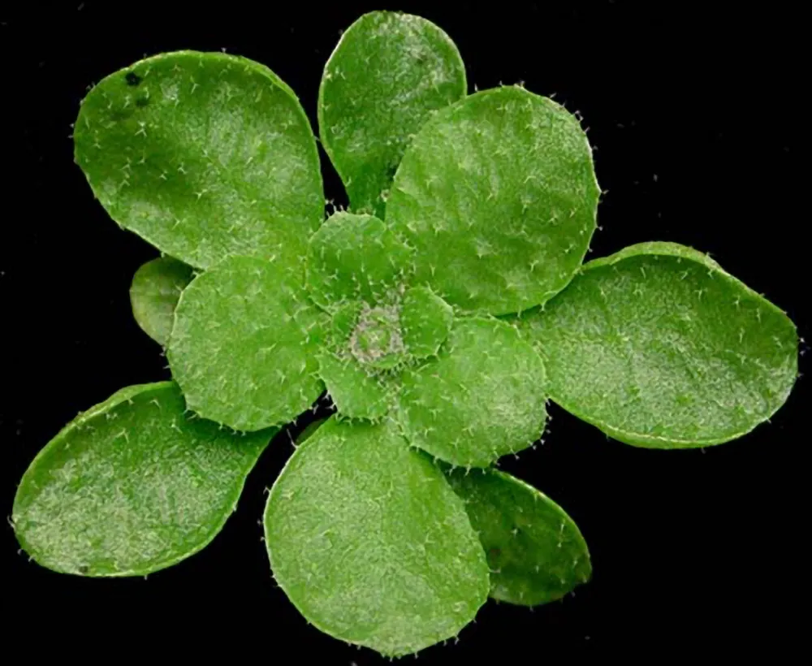

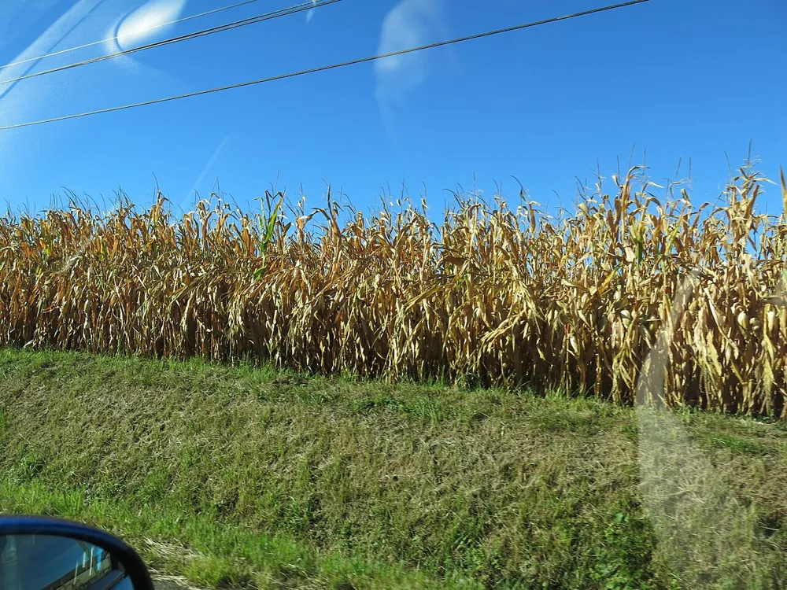

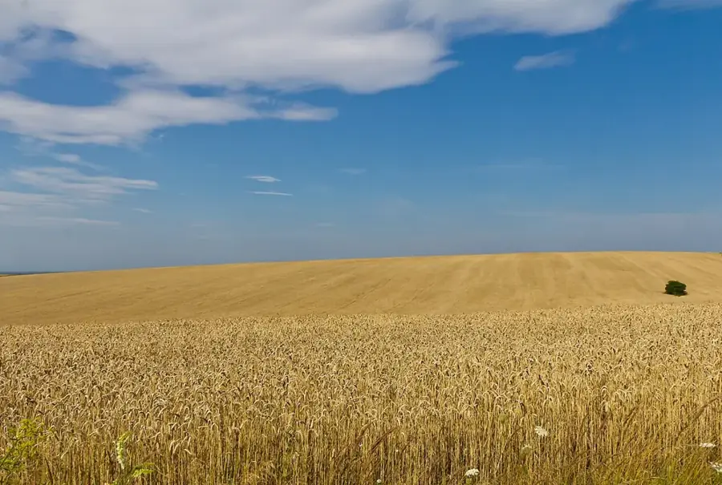
02Окислювальний стрес — спільна мова стресів
Усі абіотичні стреси мають спільного «знаменника»: вони порушують баланс між тим, скільки енергії рослина отримує, і тим, скільки вона може витратити на асиміляцію. Надлишок енергії перетікає на кисень і дає активні форми кисню (АФК). Тому окислювальний стрес — це не окремий стрес, а мова, якою розмовляють усі інші.[16, 17]
2.1Звідки беруться АФК і чому їх так багато
Молекулярний кисень сам по собі малоактивний, але його «збудження» або відновлення дає чотири основні форми. Синглетний кисень (¹O₂) виникає в реакційних центрах ФС II при надлишку світла. Супероксид (O₂˙⁻) утворюється, коли електрони з ФС I «стікають» на O₂ (реакція Мелера), а також у мітохондріях і при роботі НАДФН-оксидаз. Пероксид водню (H₂O₂) — найстабільніша форма, що дифундує крізь аквапорини й слугує сигналом. Гідроксильний радикал (˙OH) — найагресивніший: живе наносекунди й реагує з усім, що поруч; для нього в рослини немає ферменту, є лише «пастки» — манітол, пінітол, галактинол.[16, 17]
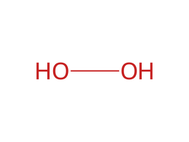
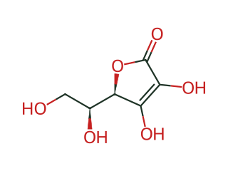
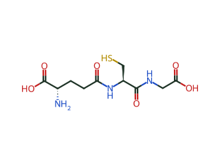

| Джерело | Що відбувається | Головні АФК |
|---|---|---|
| Хлоропласт (ФС I, ФС II) | надлишок світла за закритих продихів; реакція Мелера; «перегрів» реакційних центрів | O₂˙⁻, H₂O₂, ¹O₂ |
| Пероксисоми | фотодихання (гліколат-оксидаза) — основне джерело H₂O₂ на світлі за посухи й спеки | H₂O₂ |
| Мітохондрії | дихальний ланцюг, особливо комплекси I і III при порушеному потоці електронів | O₂˙⁻, H₂O₂ |
| Апопласт | RBOH (NADPH-оксидази плазмалеми) — керований, сигнальний вибух АФК | O₂˙⁻ → H₂O₂ |
| Клітинна стінка | пероксидази і оксидази, що працюють при патогенах і стресах | H₂O₂, ˙OH |
2.2Двоякість АФК: сигнал чи шкода
Парадокс у тому, що ті самі молекули є і «отрутою», і «телеграфом». У низьких концентраціях АФК — сигнал: H₂O₂ окиснює цистеїни у факторах транскрипції, кіназах, каналах і запускає захисні програми. Коли ж виробництво АФК перевищує потужність антиоксидантної системи, вони окиснюють ліпіди (перекисне окиснення), білки й ДНК. Тому клітині потрібен баланс, а не «нуль АФК» — недарма сучасні огляди називають АФК «хорошими».[18, 19]
Крутіть виробництво АФК і потужність антиоксидантів: рівень у клітині зсувається між «спокоєм», «сигналом» і «шкодою». Кнопки стресів змінюють виробництво.
2.3Антиоксидантна система: ферменти й метаболіти
Супероксиддисмутази (SOD) перетворюють O₂˙⁻ на H₂O₂: Cu/Zn-SOD працює в цитозолі й хлоропласті, Mn-SOD — у мітохондріях, Fe-SOD — у хлоропласті. H₂O₂ розкладають каталази (пероксисоми) та аскорбатпероксидази APX (хлоропласт, цитозоль). APX потребує аскорбату, тому його регенерують MDHAR (за рахунок НАДН/НАДФН) і DHAR (за рахунок глутатіону), а окиснений глутатіон повертає у форму GSH глутатіонредуктаза (GR) коштом НАДФН. Цей ланцюг називається циклом Асади–Галлівелла, або аскорбат-глутатіоновим циклом.[20, 16]
Метаболічні антиоксиданти — аскорбат, глутатіон, токофероли, каротиноїди, флавоноїди, пролін — працюють «першою лінією»: гасять ¹O₂, віддають електрони радикалам і стабілізують мембрани. Глутатіон до того ж — «сировина» для фітохелатинів, що зв’язують метали (розділ 8).
Крок за кроком простежте шлях електронів. Вимкніть фермент — і побачите, де «заторить» цикл.
2.4Фотозахист: як хлоропласт скидає надлишок енергії
Хлоропласт — найбільше джерело АФК, тому він має найрозвиненіший захист — спільний для посухи, спеки й холоду. Нефотохімічне гасіння (NPQ) розсіює надлишок збудження як тепло: його запускає білок PsbS у відповідь на підкислення просвіту тилакоїдів, а ксантофіловий цикл (віолаксантин → антераксантин → зеаксантин) перемикає антенні комплекси в «гасильний» стан. Циклічний транспорт електронів навколо ФС I (PGR5/PGRL1, NDH) створює ΔpH без відновлення NADP⁺ і захищає ФС I; фотодихання та водно-водний цикл (електрони на O₂ і далі до води через APX) — теж «клапани». Коли всі клапани перевантажені, настає фотоінгібування: пошкоджується білок D1 ФС II.[21, 20]
Саме тому за закритих продихів (посуха) і низьких температур (охолодження гальмує темнові реакції) світло стає небезпечним: енергії багато, а акцептора немає. Антоціани у молодих листках і при холоді — ще один «сонцезахисний екран». А УФ-B сприймає спеціальний фоторецептор UVR8, який вмикає синтез флавоноїдів.[22]
Збільшуйте освітленість і закривайте продихи: частка енергії, яку листок не може використати, зростає. Вмикайте захисні механізми й дивіться, що відбувається.

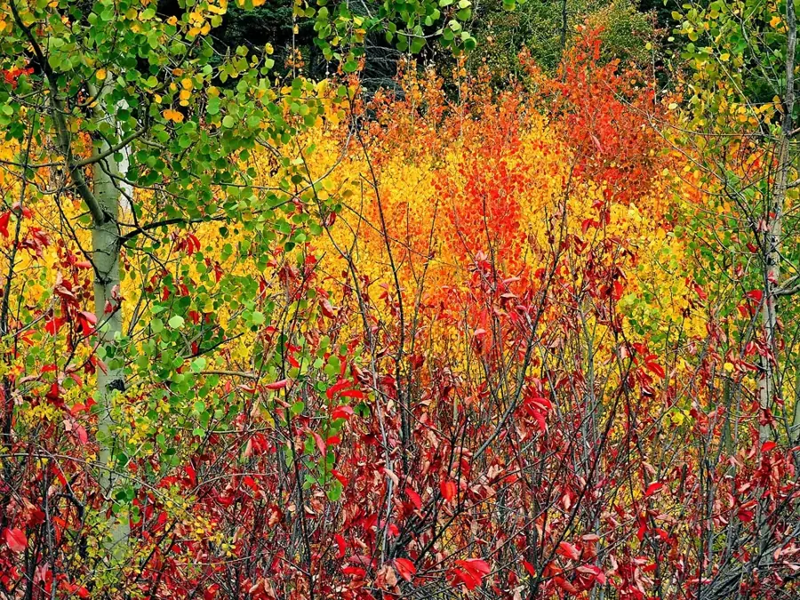

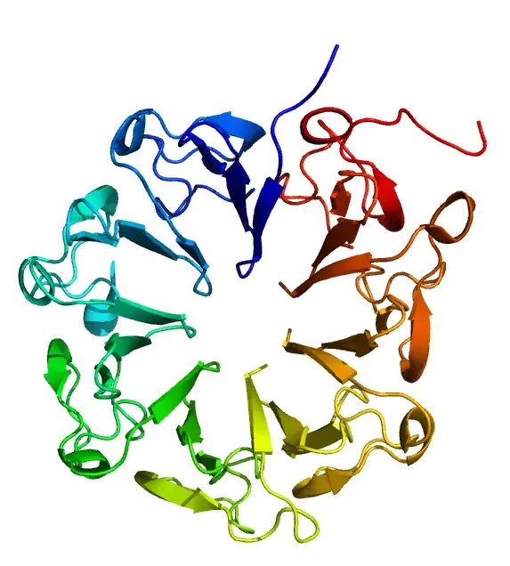
Деталі: чому «закриті продихи + яскраве світло» — найгірша комбінація
Коли продихи закриті, концентрація CO₂ в листку падає, Rubisco частіше карбоксилює не CO₂, а O₂ — зростає фотодихання й виробництво H₂O₂ у пероксисомах. Одночасно цикл Кальвіна споживає менше НАДФН, і ФС I «скидає» електрони на кисень. Тому посуху слід розглядати як одночасно водний і окислювальний стрес.
03Посуха
Посуха — найпоширеніший і найдорожчий для аграрія абіотичний стрес. Її суть — водний дефіцит: вода випаровується з листка швидше, ніж надходить із ґрунту. Наслідки каскадні: падає тургор, закриваються продихи, зменшується надходження CO₂, пригнічується фотосинтез, накопичуються АФК. Реакція залежить від того, коли настає посуха: у вегетативну фазу, під час цвітіння (найкритичніша для злаків) чи наприкінці наливу зерна (термінальна).

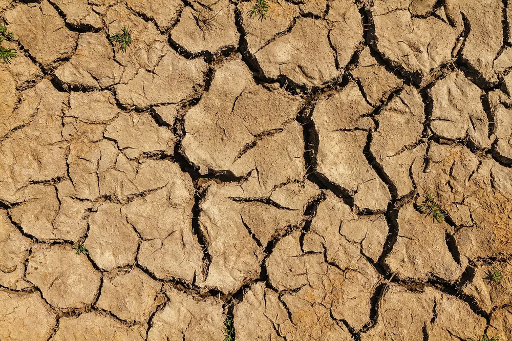

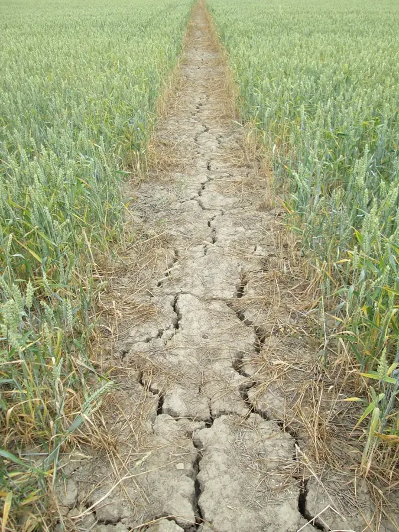
3.1Сенсори: OSCA1 і кандидати
У 2014 році Yuan зі співавторами шукали мутантів Arabidopsis за порушенням Ca²⁺-сигналу в замикаючих клітинах і коренях на осмотичний стрес. Так знайшли osca1 — мутант із порушеною осмотичною Ca²⁺-сигналізацією, гіршою транспірацією і ростом кореня. Білки OSCA1 утворюють Ca²⁺-проникні канали, що відкриваються гіперосмолярністю (підтверджено в клітинах HEK293). Мутант нечутливий до манітолу, сахарози й рибози, але не до H₂O₂ — тобто це специфічний осмосенсор.[10]
Кріо-ЕМ-структура OSCA1.2 (Liu et al., 2018) — гомодимер, у якому кожен протомер має 11 трансмембранних спіралей; у неактивованому стані канал закритий. Автори припускають, що мембрана, натягуючись, відкриває іонний потік; OSCA1.2 і OSCA1 ідентичні приблизно на 85 %.[23] Гомологи рису OsOSCA1.1/1.4 також сприймають гіперосмолярність і сіль. Кандидатами в модулятори лишаються механочутливі канали MSL та MCA, гістидинкіназа AHK1, кінази клітинної стінки FERONIA й THESEUS.
3.2Сигнал «корінь → пагін»: пептид CLE25 і синтез ABA
Корінь першим відчуває висихання ґрунту, але продихи розташовані в листку. Takahashi зі співавторами (2018) показали: посуха індукує CLE25 у коренях → пептид іде ксилемою до листків → через рецептори BAM1/BAM3 індукує NCED3 (ключовий фермент синтезу ABA) → продихи закриваються. CRISPR-мутанти cle25 накопичували менше ABA й були чутливішими до зневоднення.[24] За повідомленням ISAAA (вторинне джерело), через 3 год зневоднення ABA в листках мутантів було в 7 разів менше. Однак у щепленнях на підщепі cle25 експресія NCED3 у листку сягала близько 80 % рівня дикого типу (Molecular Cell, 2018) — тож діють і гідравлічні та електричні сигнали, а CLE25 лише один із каналів.
Споріднений пептид CLE26, що відрізняється від CLE25 однією амінокислотою, дає стійкість лише рослинам із попереднім «пам’ятю» про посуху; ефект залежить від гена клітинної стінки XYN1.[25]
Натисніть на ланку, щоб прочитати, що там відбувається. Вимкніть ген-учасник — побачите, де обривається сигнал і що це дає рослині.
3.3ABA-сигналінг: рецептор → фосфатаза → кіназа → канал
Сучасна модель ABA-сигналу — це «подвійне заперечення». Рецептори PYR/PYL/RCAR зв’язують ABA й блокують протеїнфосфатази PP2C (наприклад, ABI1), які в нормі гасять кінази SnRK2; звільнені SnRK2 фосфорилюють свої мішені.[26, 27, 28] SnRK2 підкласу III (SnRK2.2/2.3/2.6-OST1) активуються ABA; підкласи I–II — осмотичним стресом без ABA. RAF-подібні MAP3K (B2/B3/B4-RAF) фосфорилюють SnRK2 і зв’язують ранній осмотичний сигнал із каскадом ABA.
У замикаючих клітинах OST1 активує аніонний канал SLAC1, пригнічує K⁺-канал KAT1 і активує RBOHF (H₂O₂ → Ca²⁺-канали); кінази CPK6/21/23 утворюють паралельну Ca²⁺-гілку. Клітина втрачає Cl⁻, малат і K⁺, вода слідом виходить, тургор падає — продих закривається.[29] Ядерні мішені SnRK2 — фактори AREB/ABF, що зв’язують елемент ABRE (ACGTGG/TC). Є й ABA-незалежна гілка — DREB2A на елементі DRE/CRT (A/GCCGAC).
Додавайте ABA — спостерігайте за потоками іонів, тургором і відкриттям продиху. Вимкніть компоненти (мутанти), щоб побачити, за що відповідає кожен.

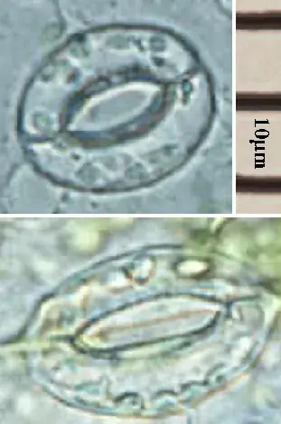

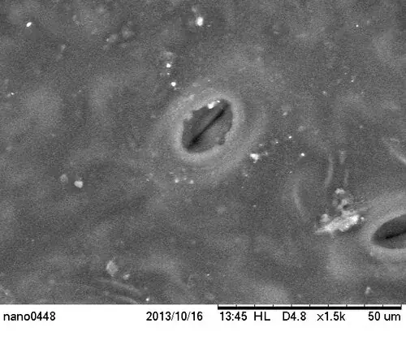

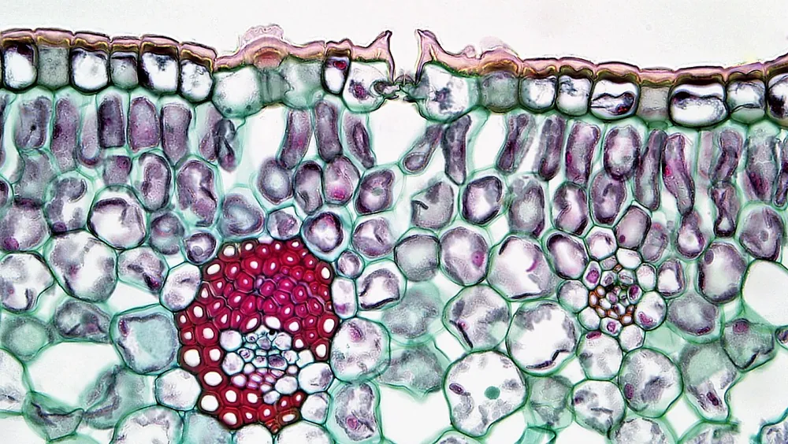
3.4Ефектори: осмоліти, дегідрини, аквапорини, антиоксиданти
Осмоліти знижують осмотичний потенціал клітини, не заважаючи метаболізму. Пролін синтезується за участі P5CS1 (лімітуюча стадія) → P5CR, розпадається ProDH; гліцинбетаїн утворюється з холіну (CMO → BADH; рис і томат його природно не накопичують); трегалоза (TPS → T6P → TPP) цікава тим, що T6P — сигнал цукрового статусу, пов’язаний із SnRK1; рафіноза, галактинол, маніт, пінітол — сумісні розчинені речовини й поглиначі ˙OH.[30, 31]
Дегідрини — внутрішньо невпорядковані білки: K-сегмент (EKKGIMDKIKEKLPG) — амфіпатична спіраль, що зв’язує мембрани; Y-сегмент; S-сегмент (після фосфорилювання — ядерна локалізація). Вони частково згортаються при зневодненні, стабілізують мембрани й ферменти, хелатують метали.[32] Водний транспорт: PIP-аквапорини закриваються при дефосфорилюванні, протонуванні His петлі D і зв’язуванні Ca²⁺.[33] Вразливість ксилеми описує P50 — водний потенціал при 50 % втрати провідності. Ізогідричні види рано закривають продихи (менше емболів, ризик «вуглецевого голодування»), анізогідричні тримають газообмін і ризикують кавітацією.
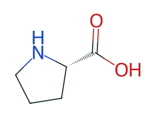
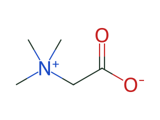
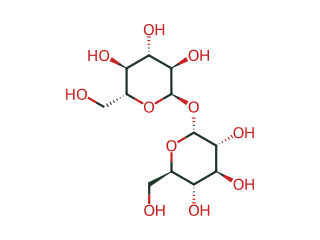
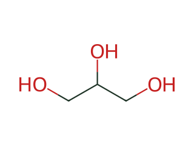

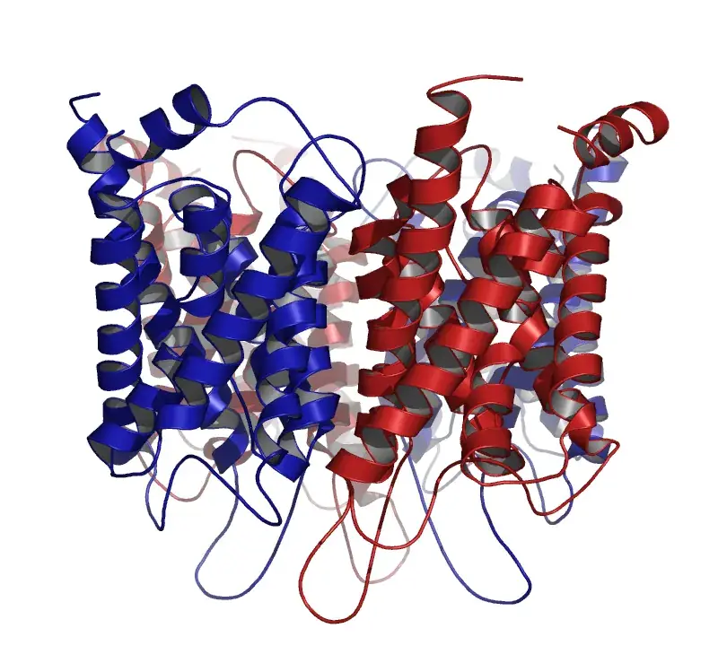
Перетягніть повзунок вмісту води: тургор падає до нуля в точці втрати тургору. Збільште осмотичну адаптацію — клітина «пересувається» й довше тримає тургор.
3.5Корені: кут росту, гідротропізм, бар’єри
DRO1 рису (Uga et al., 2013) кодує регулятор кута росту кореня родини IGT. Функціональний алель із суходільного сорту Kinandang Patong, перенесений у IR64 (з нефункціональним алелем), дав лінію Dro1-NIL: коріння росте глибше, доступаючи воду з нижніх шарів ґрунту.[4] За IRRI (Rice Today, «The revolution underground»), за помірної посухи урожай IR64 знизився майже на 60 %, а Dro1-NIL — лише на 10 %; за сильної посухи IR64 не дав урожаю, а Dro1-NIL — близько 30 % урожаю без стресу. У першоджерелі показник інший: у IR64 частка виповнених зерен була майже нульовою, а Dro1-NIL зберігала понад 30 % виповнених зерен. На заплавлених полях Dro1-NIL також давала вищий урожай завдяки азоту з глибоких шарів.[34]
Інші механізми: гідротропізм (MIZ1 у корі кореня), ксерогідротропізм, суберин і пояски Каспарі, що обмежують відтік води в сухий ґрунт. QTL qDTY (qDTY1.1, qDTY3.1, qDTY12.1) у рису діють за репродуктивної посухи й інтрогресовані в мегасорти.
Оберіть генотип і силу посухи. Кут кореня визначає, чи досягає коріння вологи; цифри врожаю — за повідомленням IRRI (див. застереження в тексті).

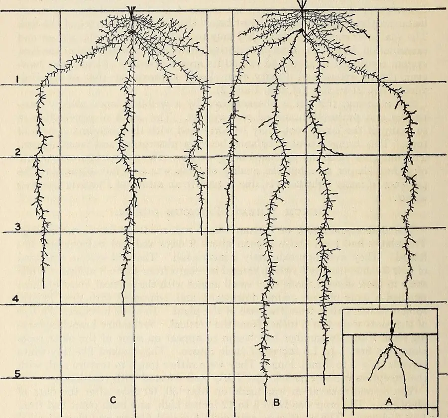

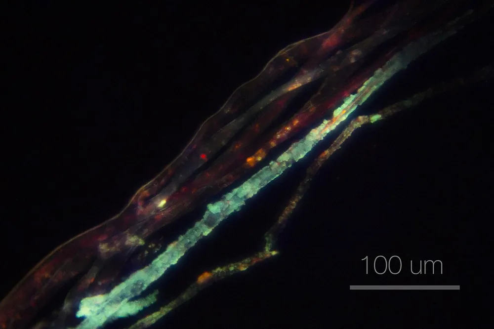

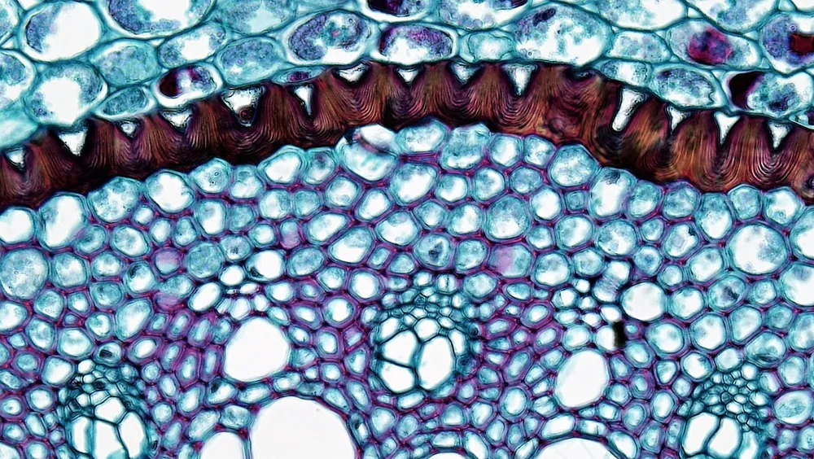

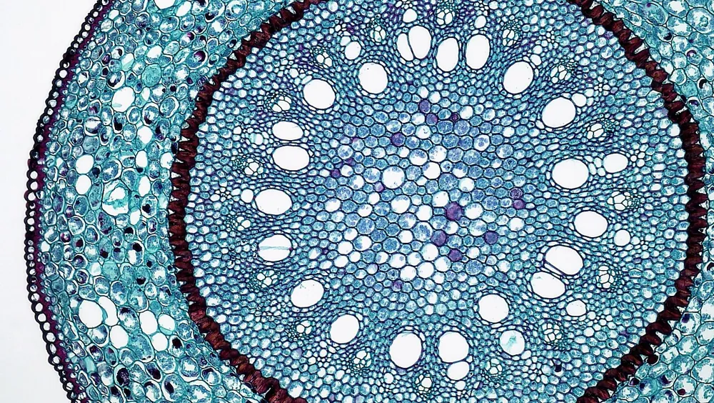
3.6Анатомічні й метаболічні уникання: кутикула, волоски, C₄ і CAM
Не лише «клітинна» стійкість, а й анатомія. Кутикула й епікутикулярні воски зменшують неустьичну втрату води; волоски відбивають світло й створюють шар нерухомого повітря; згортання листків злаків зменшує площу, що випромінює; ксероморфні степові злаки (ковили) мають вузькі листки із глибокими борозенками, де розташовані продихи. C₄-фотосинтез (кранц-анатомія) концентрує CO₂ біля Rubisco й дозволяє менше відкривати продихи; CAM відкриває продихи вночі, а CO₂ фіксує в малат, який накопичується у вакуолі.

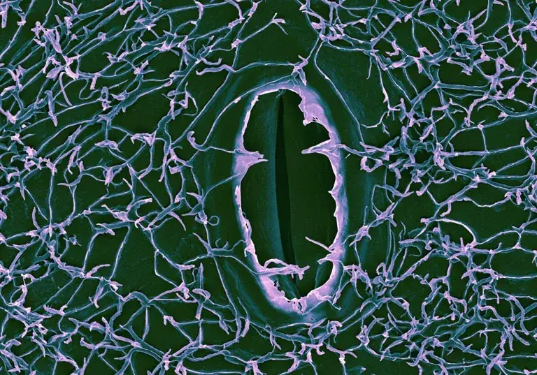

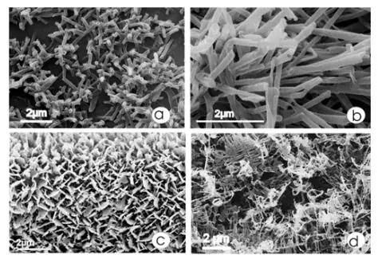

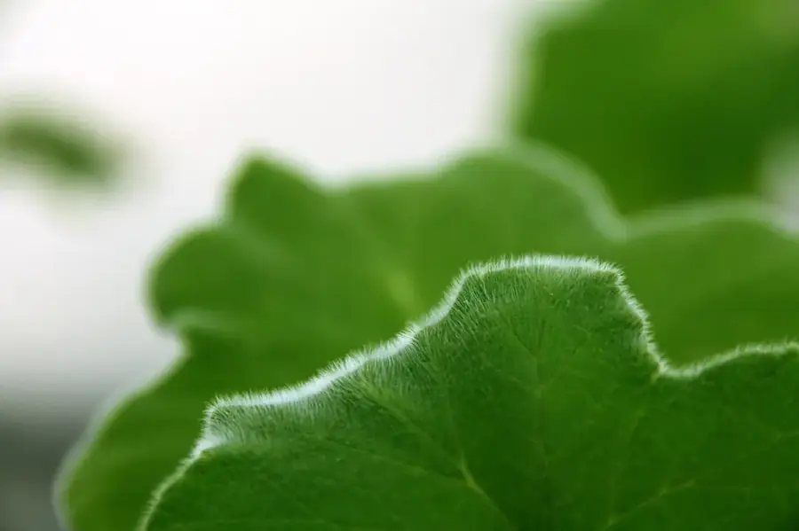

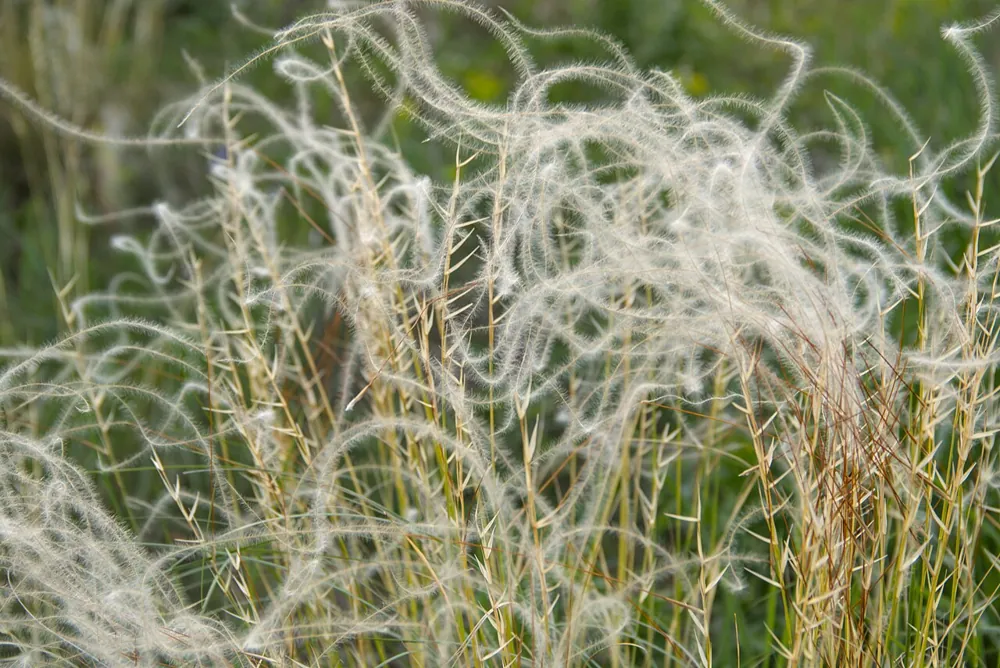

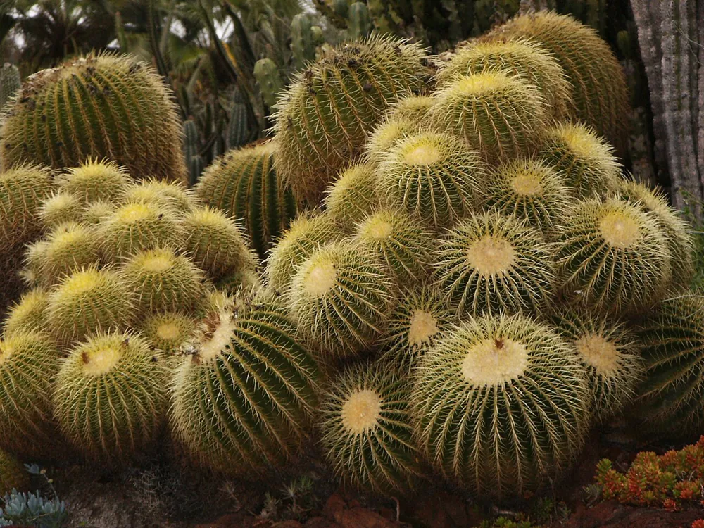

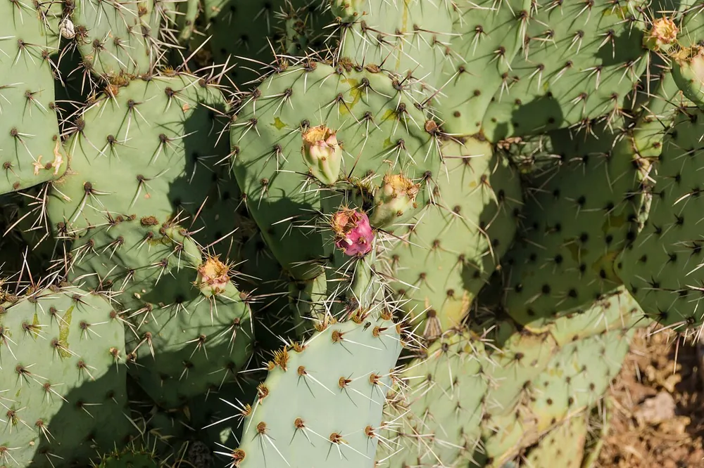

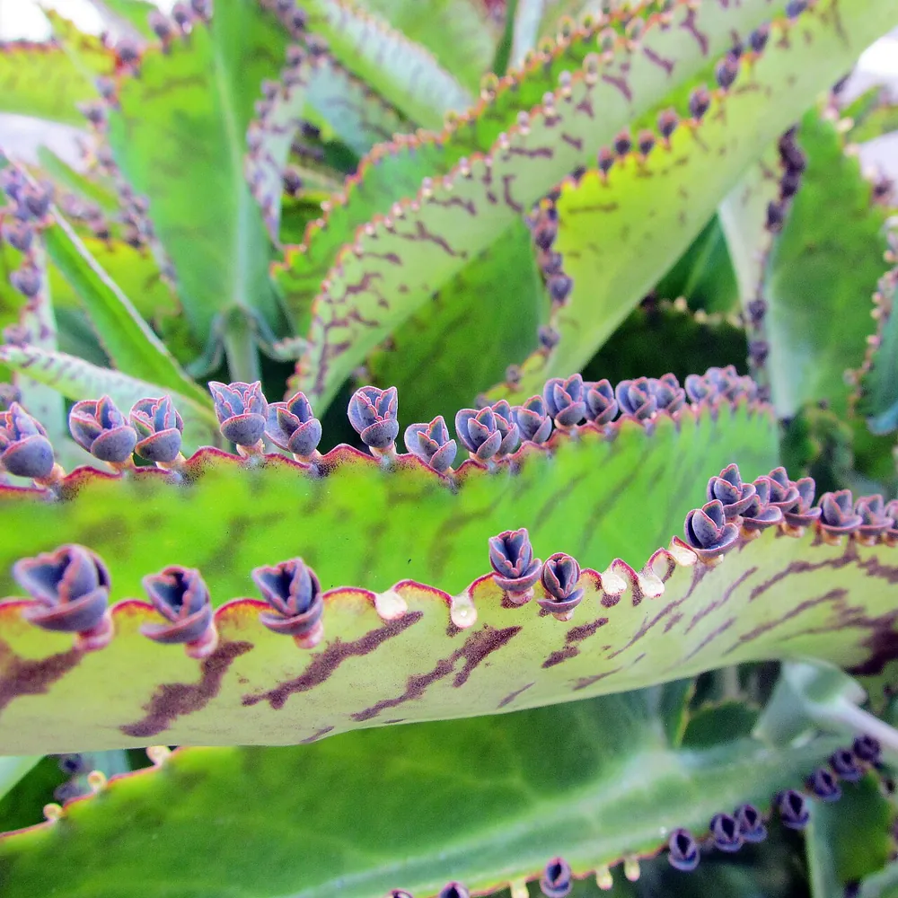

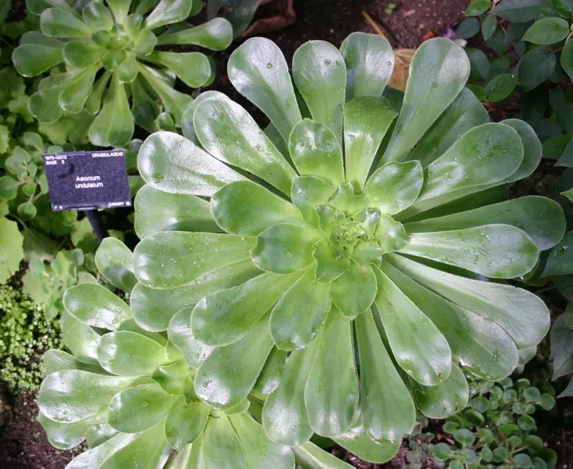

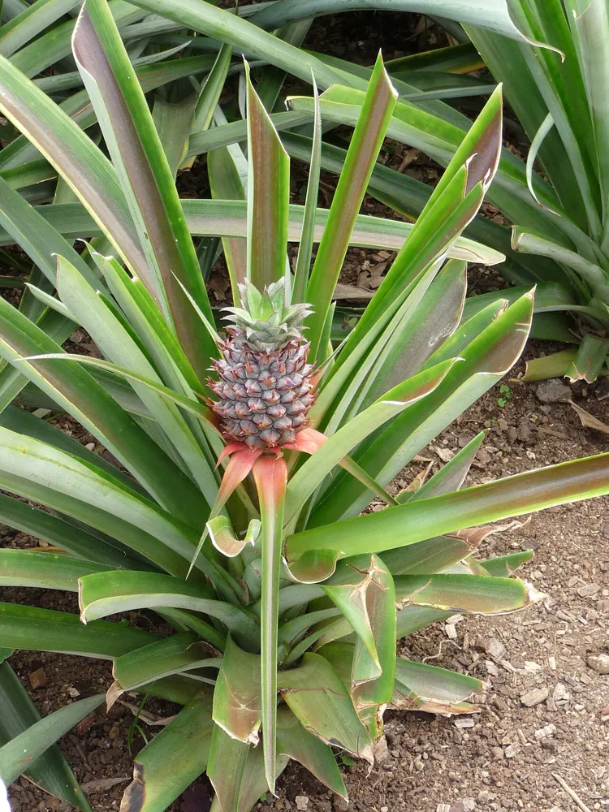

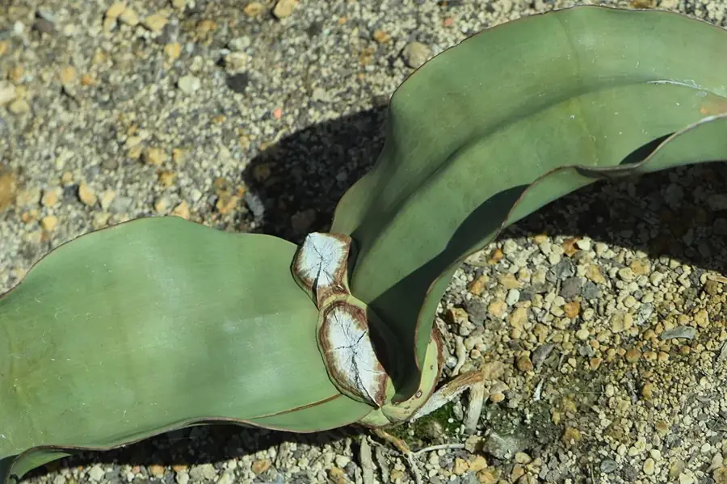
Висновок для селекціонера. Посуха — комплексна ознака. «Ген стійкості» здебільшого не існує: є сукупність QTL для кута кореня, провідності продихів, осмотичної адаптації й фенології. Тому роботу виграють ті, хто оцінює генотипи у польових умовах за комбінацій «посуха + спека» у репродуктивний період.
04Засолення
Засолення — особливий стрес, бо він подвійний: осмотичний (сіль знижує водний потенціал ґрунтового розчину) й іонний (Na⁺ і Cl⁻ токсичні для метаболізму). Грунт вважають засоленим, коли електропровідність насиченої пасти перевищує приблизно 4 дС/м (≈ 40 мМ NaCl). Основна причина вторинного засолення — зрошення з поганим дренажем: вода випаровується, а солі залишаються.

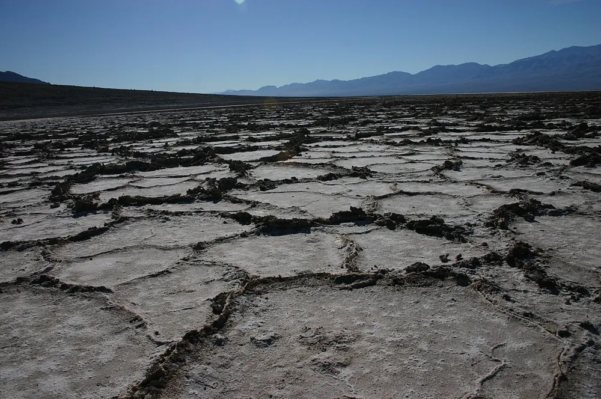

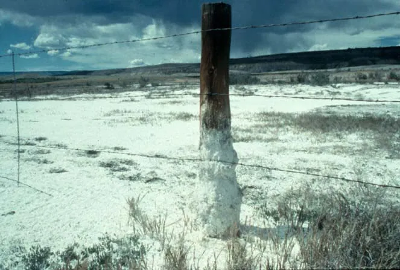
4.1Дві фази: осмотична й іонна
За Munns і Tester (2008) засолення двофазне. Осмотична фаза настає за години: знижується тургор, гальмується ріст листків (його сприймає, зокрема, OSCA1). Іонна фаза настає за дні й тижні: Na⁺ накопичується у листках, особливо старих, які передчасно відмирають, і ріст пригнічується вдруге.[35, 36] Тому селекція за солестійкістю — це переважно селекція за здатністю утримувати Na⁺ далі від листків (ексклюзія) або безпечно його розподіляти (толерантність тканин).
Jiang et al. (2019) виділили мутант moca1: MOCA1 (IPUT1) — глюкуронілтрансфераза, що синтезує гліколіпіди GIPC плазмалеми. Вони потрібні для сольової деполяризації, Ca²⁺-сплесків і хвиль, активації Na⁺/H⁺-антипортера та регуляції росту. Na⁺ безпосередньо зв’язується з GIPC і відкриває Ca²⁺-канали; мутант гіперчутливий саме до Na⁺. Інші сенсори Na⁺ досі невідомі.[11]
4.2Шлях SOS: від Ca²⁺-сигналу до виведення Na⁺
Ca²⁺-сигнатура → SOS3 (CBL4, у корені) або SCaBP8 (CBL10, у пагоні) → рекрутування кінази SOS2 (CIPK24) до мембрани → фосфорилювання автоінгібіторного домену SOS1 (Na⁺/H⁺-антипортер плазмалеми) → ефлюкс Na⁺ з епідермісу кореня й регуляція Na⁺ у ксилемі.[37, 38] Рушійна сила — H⁺-АТФаза плазмалеми (AHA); SOS2 регулює також V-АТФазу й CAX.
Прочитайте ланки й вимикайте гени. Мутант sos1 — гіперчутливий до солі; зверніть увагу, що мутанти sos2 і sos3 дають схожий ефект.
4.3Транспорт іонів: HKT, NHX, K⁺ і Cl⁻
Найсильніші польові ефекти дає HKT клас I: AtHKT1;1, OsHKT1;5 (= SKC1/Saltol), TmHKT1;5-A (= Nax2), TaHKT1;5-D (= Kna1). У паренхімі ксилеми кореня ці транспортери повертають Na⁺ із ксилемного соку в клітини.[39, 40] Munns et al. (2012): TmHKT1;5-A з T. monococcum у сорті Tamaroi знизив [Na⁺] у листках і підвищив урожай на засолених полях на 25 % порівняно з майже ізогенними лініями; без засолення втрат урожаю не було.[3] James et al. (2012) у трьох польових середовищах: Nax2 без втрат урожаю, Nax1 (TmHKT1;4-A2) поступався Tamaroi.[41] TaHKT1;5-D ідентичний TmHKT1;5-A на 94 %.
HKT клас II (OsHKT2;1) — поглинання Na⁺ за нестачі K⁺. K⁺ підтримують HAK5 і канал AKT1 (модуль CBL1/9–CIPK23); головний вхід Na⁺ — неселективні катіонні канали (NSCC). Вакуоля: NHX1/NHX2 (K⁺,Na⁺/H⁺) насамперед регулюють K⁺ і pH; NHX5/6 — ендосоми; рушійна сила — V-АТФаза й V-PPase (AVP1). Cl⁻: для цитрусових, сої й винограду Cl⁻ токсичніший за Na⁺; транспортери CLC, CCC, SLAH1/SLAH3. У сої ключовий ген виключення Na⁺ — GmSALT3 (GmCHX1).[42, 43]
Збільшуйте засолення й порівнюйте лінії: скільки Na⁺ доходить до листка і який урожай. Цифри відповідають повідомленню Munns et al. (2012) та James et al. (2012); решта — схематично.
| Ген | Рослина | Функція | Польовий ефект / застереження |
|---|---|---|---|
| TmHKT1;5-A (Nax2) | тверда пшениця | ексклюзія Na⁺ з ксилеми | +25 % урожаю на засолених полях; без втрат урожаю без засолення |
| OsHKT1;5 (SKC1/Saltol) | рис | те саме | широко інтрогресований |
| TmHKT1;4-A2 (Nax1) | тверда пшениця | ексклюзія в листкових піхвах | втрати врожаю — на відміну від Nax2 |
| GmSALT3 (CHX1) | соя | виключення Na⁺ і Cl⁻ | ключовий ген виключення Na⁺ |
| SOS1 | Arabidopsis, усі рослини | ефлюкс Na⁺ з кореня | надекспресія допомагає в лабораторії |
4.4Галофіти: як це роблять мешканці солончаків
Галофіти витримують 200 мМ NaCl і більше, і це не диво одного гена, а поєднання ознак. Сольові залози (Limonium, Aeluropus, тамарикс) виділяють сіль на поверхню листка. Пухирцеві клітини (Mesembryanthemum crystallinum, Chenopodium quinoa) — епідермальні «сміттєві баки» для Na⁺; у M. crystallinum на засоленні відбувається перехід на CAM. Eutrema salsugineum і Schrenkiella parvula мають конститутивно високу експресію SOS1/NHX і більше копій генів іонного транспорту. Галотропізм (ріст кореня від солі) залежить від перерозподілу PIN2 та ауксину.[44]

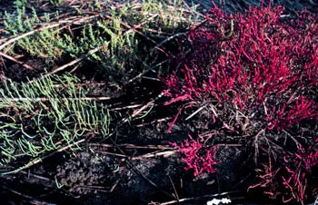

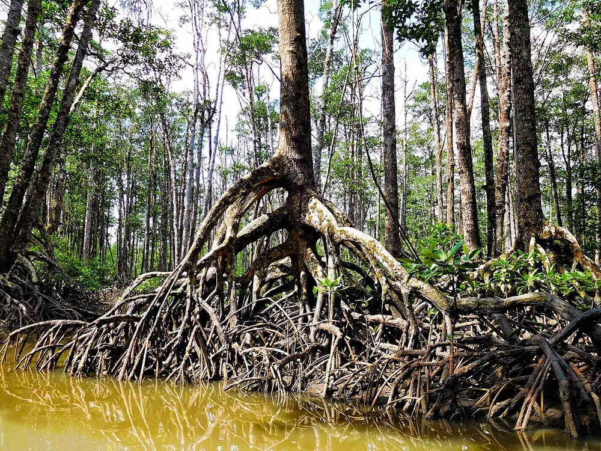

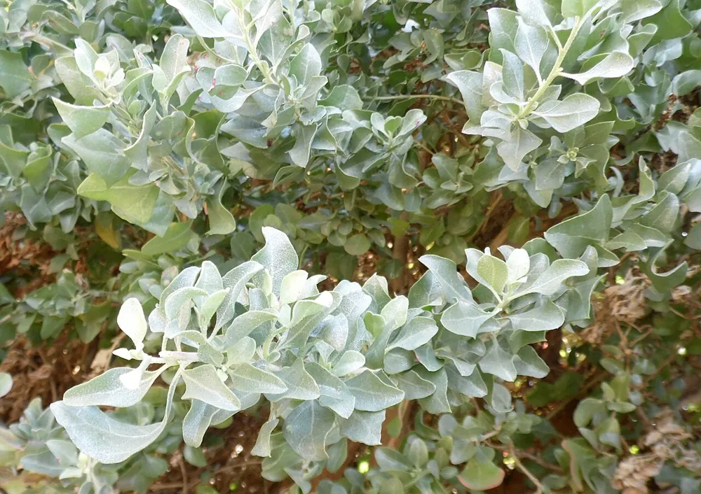


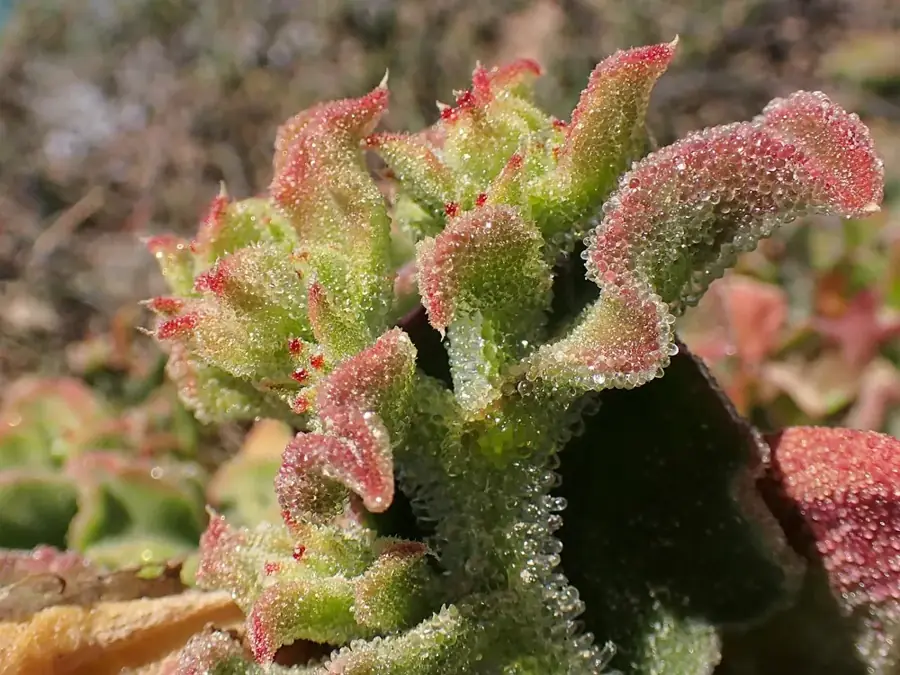

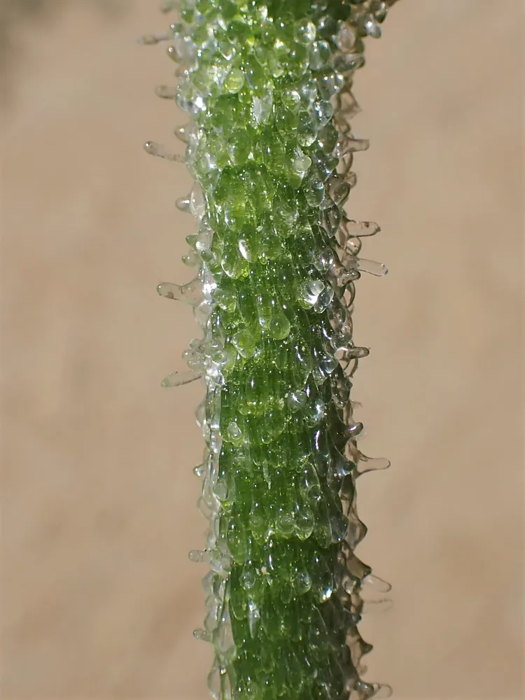

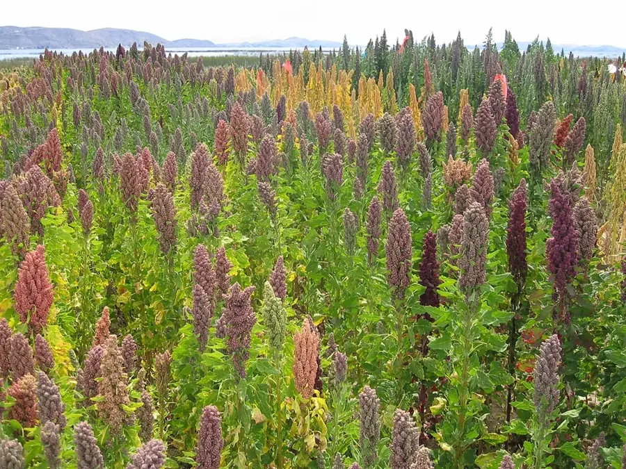

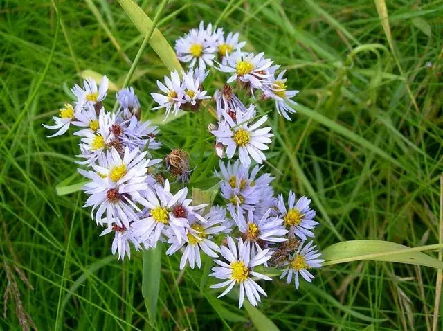

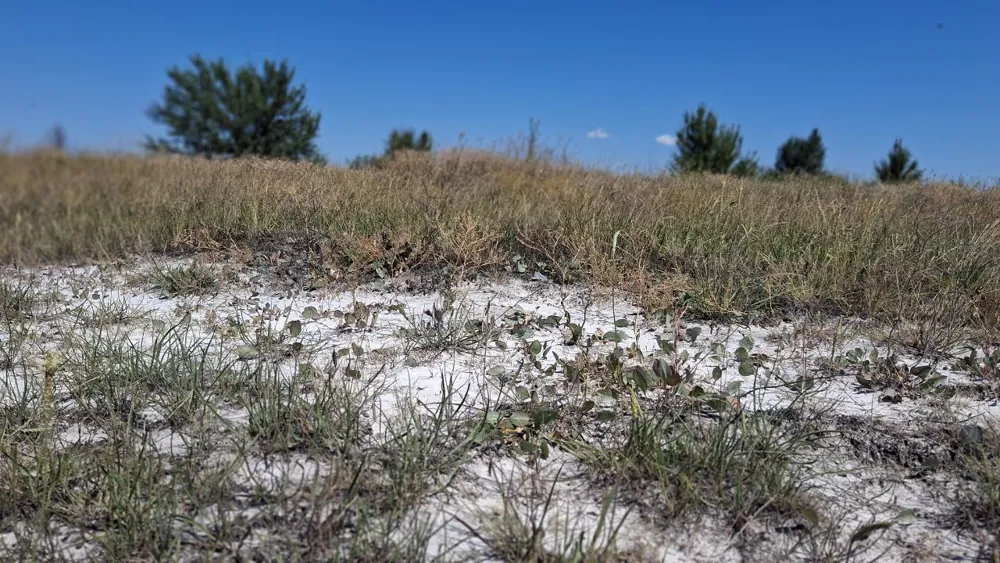
Чому галофіти не стають «супер-культурами» простим перенесенням генів. Одиничні гени (наприклад, надекспресія SOS1 чи NHX1) помітно допомагають у лабораторії, але в полі значущий ефект дає саме інтрогресія природних алелів у відповідному генетичному тлі. Для галофітів важлива також анатомія (залози, пухирці) — її набагато важче «додати» до культури.
05Спека
Спека — це не лише «дуже тепло». Розрізняють помірне підвищення температури, яке рослина сприймає як сигнал і змінює морфологію (термоморфогенез), і тепловий шок, який руйнує білки й мембрани. У полі шкодять і день, і ніч: нічна спека підвищує витрати на дихання, денна — гальмує фотосинтез, бо термолабільна Rubisco-активаза — одна з перших «слабких ланок», а кисневовидільний комплекс ФС II і тилакоїдні мембрани теж чутливі. Найчутливіші стадії — пилок і мейоз (тапетум, цукри пилкових зерен); для посушливих зон важливе транспіраційне охолодження колоса.[45, 46]

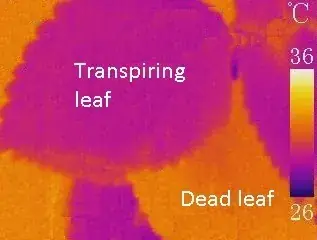

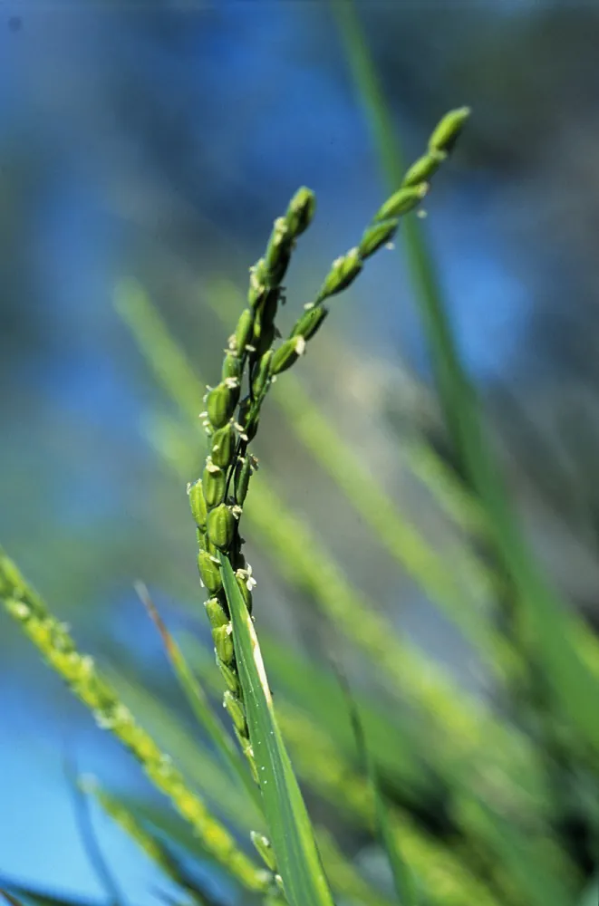
5.1Термосенсори: чотири механізми «рослинного термометра»
Jung et al. та Legris et al. (2016, Science) показали, що тепло прискорює термальну реверсію фітохрому B Pfr → Pr; це стабілізує фактор PIF4, який вмикає синтез ауксину (YUCCA8, TAA1) і подовжує гіпокотиль — термоморфогенез.[12, 47] ELF3 має пріоно-подібний домен із поліглутаміновим повтором; за 27 °C він через фазове розділення переходить у неактивні краплі й «відпускає» промотори генів росту й цвітіння (Jung et al., 2020).[13] PIF7 сприймає тепло через шпилькову структуру 5′-UTR мРНК (Chung et al., 2020).[48] Канали CNGC дають вхід Ca²⁺ при нагріванні.
У однодольних такого домену зазвичай немає, а ELF3 Brachypodium не здатний до фазового розділення (Mol Biol Evol, 2024) — модель не переноситься прямо на пшеницю. Тому для злаків термосенсори — це поле активних досліджень, і слід обережно ставитися до екстраполяції з Arabidopsis.
Ведіть температуру: бачите реверсію фітохрому, конденсацію ELF3, рівень PIF4 і подовження гіпокотиля. Це схема за Jung 2016/2020, Legris 2016 — якісна.
5.2Протеостаз: шаперони, HSF і «пам’ять про спеку»
У нормі HSFA1 утримуються комплексами з HSP70/HSP90. Денатуровані білки «відтягують» шаперони на себе — і HSFA1 вмикають DREB2A, HSFA2, HSFA7, MBF1c та гени HSP. HSP101 (ClpB-дисагрегаза, що розплутує агрегати) необхідна для набутої термотолерантності;[49] ROF1 (FKBP62) з HSP90 модулює HSFA2. Пам’ять про спеку: HSFA2 підтримує H3K4me3 на генах APX2 і HSA32; H2A.Z при промоторах стримує транскрипцію в холоді й втрачається з нагріванням. UPR (відповідь на розгорнуті білки в ЕР): bZIP28/bZIP17 після протеолізу в Гольджі йдуть у ядро, IRE1 сплайсує мРНК bZIP60; обидві гілки індукують BiP.[46, 50]
Задайте температуру й тривалість: криві показують частку розгорнутих білків і рівень HSP. Вимкніть HSP101 або HSFA1 — побачите, чому без них рослина не відновлюється.

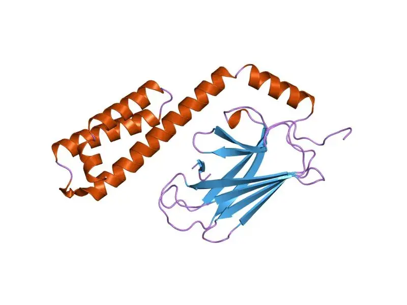

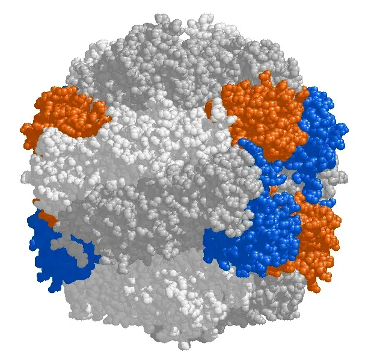
5.3Клоновані гени термотолерантності
TT1 (Oryza glaberrima) кодує субодиницю α2 протеасоми 26S (Li et al., 2015): протеасома швидше усуває білки, ушкоджені теплом. TT3: Zhang et al. (2022, Science) клонували QTL TT3 із CG14 (донор) на тлі Wuyunjing: за тепла E3-лігаза TT3.1 переходить із плазмалеми в ендосоми, убіквітинує попередник хлоропластного білка TT3.2 і спрямовує його на вакуолярну деградацію; надлишок TT3.2 пошкоджує тилакоїди й ФС II. У теплиці та полі надекспресія TT3.1CG14 або мутація tt3.2 підвищували зав’язування насіння, масу 1000 зерен і урожай на рослину за спеки.[51] TT2 (Gγ-субодиниця G-білка) пов’язаний зі збереженням воску.
| Ген | Механізм | Польовий доказ | Примітка |
|---|---|---|---|
| TT1 | протеасома 26S (α2) | краща виживаність і зав’язування за спеки | донор O. glaberrima |
| TT3.1/TT3.2 | убіквітинування й деградація попередника хлоропластного білка | вищий урожай на рослину за спеки (Zhang 2022) | донор CG14; редагування tt3.2 |
| TT2 | G-білок, збереження воску | термотолерантність | — |
5.4Українські дослідження спеки
В Інституті ботаніки ім. М. Г. Холодного (Косаківська, Войтенко, Васюк, Щербатюк) після гіпертермії (+40 °C, 2 год) у 14-денних рослин озимої пшениці «Подолянка» вміст ABA зріс у 1,3 раза (39,5 і 19,0 нг/г сирої маси в пагонах і коренях), а вміст ІОК знизився в 2,1 раза в коренях і в 1,7 раза в пагонах (Вісник ХНАУ, серія Біологія, 2020). Загальний вміст цитокінінів після стресу в пшениці був удвічі вищим, ніж у спельти; автори пропонують кількісний аналіз цитокінінів, ГА₃ і саліцилової кислоти для скринінгу стійких генотипів.[52, 53]
Група Колупаєва (ХНАУ, нині ДБТУ) показала, що H₂O₂ є посередником індукованої путресцином теплостійкості проростків пшениці.[54] Це гарний приклад, як сигнальна молекула (H₂O₂) може бути і ознакою шкоди, і ланкою захисту: все залежить від дози й часу.
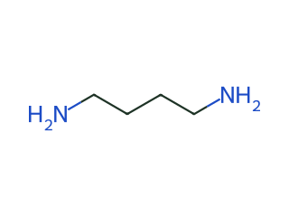
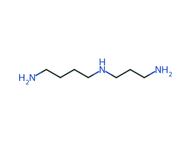
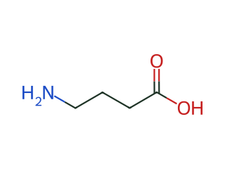
06Холод і заморозки
Холод — не один стрес, а два. Охолодження (chilling), +10…+12 °C і нижче, шкодить теплолюбним культурам (рис, кукурудза, томат): відбуваються фазові переходи мембран, фотоінгібування ФС I, порушення активності Rubisco-активази й синтезу АТФ. Заморозки (freezing) — температури нижче 0 °C, коли утворюється лід. Озимі злаки, дерева помірного поясу й арктичні рослини мають холодову акліматизацію: за кілька днів низьких, але додатних температур їхня морозостійкість зростає на десятки градусів.[55, 56]


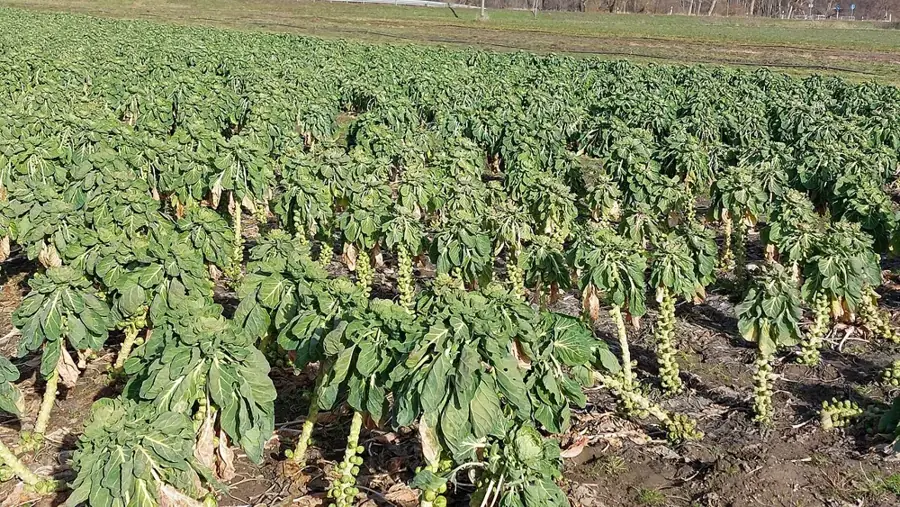

6.1Сенсори холоду
Ma et al. (2015, Cell) клонували QTL COLD1 із japonica-рису: білок плазмалеми й ЕР взаємодіє з Gα-субодиницею RGA1, прискорює її GTP-азну активність і забезпечує вхід Ca²⁺ на холоді. Надекспресія COLD1jap підвищує стійкість, нестача робить рослини чутливими. Відмінність japonica/indica визначає SNP2, що походить від китайського дикого O. rufipogon. Додатково холод сприймається через зниження плинності мембран, цитоскелет, Ca²⁺-канали, фітохроми та ELF3.[14, 57]
Одна SNP у COLD1 відрізняє холодостійкий japonica-рис від чутливого indica — приклад того, що сорти часто відрізняються саме алелями сенсорів.
6.2CBF-залежний шлях: від Ca²⁺ до COR-генів
Холод → Ca²⁺/COLD1 → CRLK1 → MEKK1–MKK2–MPK4 (позитивний регулятор) ⊣ MPK3/6 (фосфорилюють ICE1 і ведуть до його деградації). OST1 фосфорилює й стабілізує ICE1 (проти E3-лігази HOS1); SIZ1 SUMO-ює ICE1. Потім ICE1 + CAMTA3 + BZR1 → CBF1/2/3 → CRT/DRE → COR15A, KIN1, RD29A, LEA.[58, 55] Паралельно: HSFC1, ZAT12, CZF1; PIF3 і EIN3 пригнічують CBF; JAZ–ICE1; CCA1/LHY — циркадне «гейтування». COR15A — невпорядкований білок строми, що на холоді набуває α-спіралі й запобігає переходу мембран хлоропласта в гексагональну фазу II під час замерзання.
Класичні досліди: надекспресія CBF1 у Arabidopsis індукує COR-гени й підвищує стійкість до замерзання без попередньої акліматизації,[59] але конститутивна надекспресія CBF/DREB1A спричиняє карликовість — потрібні стресоіндуковані промотори, наприклад rd29A.[60]
Прочитайте ланцюг і спробуйте вимкнути ген: мутанти ice1 і cbf1/2/3 показують, де саме обривається каскад. Режим «конститутивний CBF» демонструє компроміс «ріст — стійкість».
6.3Морозостійкість: що відбувається з клітиною при замерзанні
Позаклітинний лід витягує воду з клітин, тож заморозок — це дегідратаційний стрес; звідси перехресна стійкість із посухою (дегідрини, LEA, цукри). Антифризні білки апопласту озимого жита — гомологи глюканаз, хітиназ і тауматиноподібних білків; вони пригнічують рекристалізацію льоду.[61, 62] Глибоке переохолодження в паренхімі ксилеми й бруньках деревних дозволяє уникати льоду до близько −40 °C (межа гомогенної нуклеації). Десатуразі FAD2, FAD3/7/8 підвищують ненасиченість ліпідів. За гіпотезою Мурати холодочутливість пов’язана з насиченими молекулами фосфатидилгліцеролу тилакоїдів; зміна специфічності гліцерол-3-фосфат-ацилтрансферази в тютюні змінювала холодочутливість (Murata et al., 1992, Nature).[63]
Зніжуйте температуру. Порівняйте неакліматизовану й акліматизовану клітини: де виникає ушкодження мембран і чому цукри та COR15A рятують.


6.4Зимостійкість озимих злаків: VRN і Fr-A2
Fr-A1 — плейотропний ефект VRN-A1: до вернализації CBF-регулон індукується повністю, після переходу до генеративного стану здатність до загартування падає. Knox et al. (2010, TAG) пов’язали CNV генів CBF у Fr-A2 із морозостійкістю (переважно ячмінь) і вперше показали CNV CBF14 у пшениці; Dhillon & Stockinger (2013) описали CNV Cbf14 в A, B і D геномах.[64, 65] Zhu et al. (2014): гаплотипи FR-A2-S і FR-A2-T; модель VRN1 + FR-A2 + взаємодія пояснює 32,0 % варіації морозостійкості в озимій і 20,7 % в ярій панелі; більша копійність VRN-A1 корисна лише з FR-A2-T. Рекомендація: FR-A2-T + три копії рецесивного vrn-A1.[66]
Würschum et al. (2017), 407 європейських озимих сортів: CNV CBF-A14 пояснює 24,3 % генотипової варіації зимостійкості, весь Fr-A2 — близько 40 %, CNV VRN-A1 — ще близько 3 % (3,0 % в анотації, 2,9 % у таблиці). Одну копію VRN-A1 мали 20 генотипів, дві — 179, три — 208.[67] У твердої пшениці (170 озимих і 14 ярих генотипів) Fr-A2 пояснює близько 90 % генотипової варіації; копійність CBF-A14 відповідає клімату країни походження; розроблено KASP-маркери (Sieber et al., 2016).[68]
Оберіть дослідження: стовпчик показує частку генотипової варіації морозостійкості, пояснену відповідними генами. Це різні панелі й моделі — порівнювати абсолютні значення не слід.
6.5Україна: що відомо про зимостійкість вітчизняних сортів
Досліджень копійності CBF/Fr-A2 у вітчизняних сортах ми не знайшли. Мокан і Файт (2008, Цитологія і генетика 42(6):384–390) на лініях від схрещування сорту Одеська 16 із зимостійким сортом показали, що алелі Vrd1 пояснюють 9–15 % відмінностей за зимо- й морозостійкістю, Ppd-D1 — 10–16 %; найвища стійкість — vrd1 + Ppd-D1a. Галаєва, Файт, Чеботар та ін. (2013, Цитологія і генетика) — мікросателіти хромосом групи 5. Миронівські роботи оцінюють морозостійкість фенотипово відносно сорту Миронівська 808. Саме тому перша практична рекомендація — генотипувати CNV CBF-A14, гаплотип Fr-A2 (S/T) і копійність VRN-A1 вітчизняних сортів маркерами KASP/qPCR: у європейській панелі ці маркери пояснюють близько 40 % варіації зимостійкості.
07Затоплення й гіпоксія
Затоплення шкодить не водою як такою, а нестачею кисню: у воді він дифундує приблизно в десять тисяч разів повільніше, ніж у повітрі. Розрізняють перезволоження (waterlogging — вода в кореневій зоні, пагін над водою) й занурення (submergence — рослина вкрита повністю, до дефіциту O₂ додаються брак світла й CO₂). Усередині тканин накопичується етилен — не дифундує — і саме він запускає більшість адаптацій.[69, 70]


7.1Сенсор кисню: N-degron і ERF-VII
Кисень сприймають не мембранні рецептори, а ферменти, які для роботи самі потребують O₂. MetAP відщеплює N-кінцевий Met від білків групи VII транскрипційних факторів ERF (RAP2.2, RAP2.3, RAP2.12, HRE1, HRE2); відкритий N-кінцевий Cys окиснюють цистеїноксидази PCO з O₂ як косубстратом (Weits et al., 2014) → ATE приєднує Arg → E3-лігаза PRT6 → протеасома.[15, 71, 72] За гіпоксії ERF-VII стабілізуються й вмикають ADH1, PDC1, SUS, HB1, LBD41, PCO1/2; PCO1/2 індукуються ERF-VII, утворюючи петлю зворотного зв’язку — аналог тваринної системи пролілгідроксилаза–HIF1α. Деградація ERF-VII потребує й NO, тому етилен під водою стабілізує ERF-VII ще до гіпоксії через індукцію фітоглобіну, що поглинає NO.
Ведіть кисень вниз: ERF-VII перестають розпадатися й вмикають гени бродіння. Ввімкніть етилен — і фітоглобін «з’їсть» NO, що стабілізує ERF-VII навіть за високого O₂.
7.2Дві протилежні стратегії рису: «спокій» і «втеча»
«Спокій» (LOQS — low oxygen quiescence syndrome): SUB1A — ERF-VII без Cys-дегрону;[5] він підвищує рівні DELLA-репресорів SLR1 і SLRL1, гальмує ріст і заощаджує вуглеводи.[73] «Втеча» (LOES — low oxygen escape syndrome): Hattori et al. (2009) клонували SK1/SK2 — етилен-індуковані ERF, що через GA запускають подовження міжвузлів; у звичайному рисі ця ділянка хромосоми 12 втрачена або псевдогенізована; три QTL із глибоководного рису перетворювали звичайний рис на глибоководний.[6] Nagai et al. (2020) клонували ACE1 (хр. 3, прискорювач, підвищує чутливість до GA) і DEC1 (хр. 12, цинковий пальцевий TF C2H2, гальмує подовження); модуль доповнює SD1 (GA20ox2).[74]
Це дві протилежні відповіді на два різні типи повені. Швидка короткотривала повінь (кілька днів — два тижні) — вигідніше «спокій»: рослина не витрачає вуглеводи й виживає. Повільна глибока повінь (місяці) — вигідніше «втеча»: рослина дотягується до поверхні. Тому стратегію добирають під тип затоплення; сорт Swarna-Sub1 (з SUB1A) — для районів швидких повеней.[75]
Оберіть тип повені й сорт: звичайний, SUB1A (спокій) або SK1/2 (втеча). Дивіться, як змінюються висота, запас вуглеводів і результат. Схематично.
7.3Енергетика гіпоксії: «економія» і пов’язані з нею пастки
Без кисню клітина переходить на бродіння: PDC → ADH (етанол) і LDH (лактат), докладно ці шляхи розібрано в статті «Бродіння». Закислення цитозолю перемикає LDH на PDC (модель Девіса–Робертса), бо піруватдекарбоксилаза активна за кислішого pH. Аланінамінотрансфераза й ГАМК-шунт зменшують закислення. PPi-залежні реакції (сахарозосинтаза, PPi-фосфофруктокіназа) економлять АТФ. Фітоглобін–NO-цикл регенерує NAD(P)⁺ і дає трохи АТФ.[76]
Анаеробне проростання рису: CIPK15 → SnRK1A → MYBS1 → α-амілаза RAMY3D. QTL AG1 (qAG-9-2) кодує трегалозо-6-фосфатфосфатазу OsTPP7 (Kretzschmar et al., 2015): прискорений обмін T6P сигналізує про нестачу цукру й посилює мобілізацію крохмалю для зародка й колеоптиля. Донор — Khao Hlan On; делецію OsTPP7 виявлено в понад 30 % сортів IRRI з відомими геномами — резерв для рису прямого висіву.[77]
7.4Анатомічні адаптації: аеренхіма, бар’єр ROL, адвентивні корені
Лізигенна аеренхіма (кукурудза, пшениця, рис): етилен → RBOH-залежні АФК і Ca²⁺ → програмована загибель клітин кори; схізогенна (Rumex, болотні види) — розходження клітин. Бар’єр ROL (суберин, лігнін екзодерми) зменшує втрату O₂ й вхід Fe²⁺/Mn²⁺/H₂S.[78] Також важливі адвентивні корені, газові плівки листків (гідрофобна кутикула дозволяє фотосинтезувати під водою), гіпонастія (Rumex palustris). Реоксигенація після спаду води дає сплеск АФК, висихання й фотоінгібування; SUB1A підвищує стійкість і до неї.
Збільшуйте тривалість затоплення (етилен): утворюється аеренхіма. Увімкніть бар’єр ROL — O₂ менше «витікає» в ґрунт. Подивіться, скільки кисню доходить до кінчика.


08Важкі метали й алюміній
Метали бувають двох типів. Есенційні (Zn, Cu, Fe, Mn, Ni) потрібні в слідових кількостях, але токсичні в надлишку. Неесенційні (Cd, As, Pb, Hg) токсичні завжди; вони потрапляють у рослину «зайцем» через транспортери есенційних елементів. Алюміній — окремий випадок: він не метал-мікроелемент, а токсикант кислих ґрунтів (pH < 5), де Al³⁺ швидко зупиняє ріст кореня. Захист рослини побудований на чотирьох рівнях: обмеження поглинання → хелатування → секвестрація у вакуолі → антиоксидантний ремонт.[79, 80]
8.1Поглинання: Cd/Mn, As і транспортери-«спільники»
Cd/Mn — OsNRAMP5 на дистальному боці плазмалеми екзо- та ендодерми кореня (Sasaki et al., 2012).[8] Нокаут (іонно-променевий мутагенез, Ishikawa et al., 2012; CRISPR/Cas9, Tang et al., 2017) знижує Cd у зерні більш як на 90 %, на ґрунтах із достатнім Mn без втрат урожаю, але робить рис чутливим до нестачі Mn і спеки.[81, 82] Слабкий алель Q337K у полі на Cd-забрудненому ґрунті дав на 50 % менше Cd і на 30 % менше Mn у зерні при однаковому врожаї. OsHMA3 (Ueno et al., 2010) секвеструє Cd у вакуолях кореня; надекспресія знижує Cd у зерні без порушення живлення Mn.[9] Піраміди зчеплених елітних алелів OsNRAMP5 + OsHMA3 описано в Plant Communications (2025).
As(III) — шлях кремнію: Ma et al. (2008): Lsi1 (OsNIP2;1, вхід) і Lsi2 (ефлюкс) переносять арсеніт — головну форму As у затоплених ґрунтах.[83] У полі lsi2 знижував As до 13–19 % рівня дикого типу в соломі й 51–63 % у зерні, але втрата Lsi2 порушує живлення Si і знижує врожай. Мутант lsi1 втрачав близько 80 % поглинання MMA(V) і 50 % DMA(V). As(V) надходить через PHT1, відновлюється HAC1/ACR2 до As(III), зв’язується фітохелатинами й секвеструється OsABCC1 (Song et al., 2014).[84] Інші шляхи: IRT1/ZIP (Fe²⁺, Zn²⁺, Cd²⁺), YSL (комплекси з фітосидерофорами чи нікотіанаміном), COPT (Cu⁺); Cr(VI) надходить сульфатними/фосфатними транспортерами й відновлюється до Cr(III).

Оберіть метал: у п’яти ланках (апопласт, вхід, хелатування, вакуоля, ксилема) побачите транспортер входу, хелатор, вакуолярний насос і ксилемний вантажник. Це узагальнена карта, вона не охоплює всіх видів.
Порівняйте лінії рису: скільки Cd і Mn у зерні, що відбувається з урожаєм у різних ґрунтах. Цифри — з повідомлених польових даних, інше позначено.
8.2Хелатування, секвестрація, транслокація
Схема вантажу: апопласт (пектини, ексудати) → вхід (NRAMP/ZIP/Lsi) → цитозоль: GSH → PCS1 → фітохелатини; метатіонеїни MT1–MT4; нікотіанамін; His (для Ni)[85, 86] → вакуоля: ABCC1/ABCC2 (комплекси PC–Cd, PC–As), HMA3, CAX, MTP1 (Zn), ZIF1 → ксилема: HMA2/HMA4 (Zn/Cd), FRD3 (цитрат) → пагін (у гіперакумуляторів).
8.3Гіперакумуляція: як еволюція «вмикає насос»
Гіперакумулятори накопичують у пагонах тисячі мг металу на кг сухої маси — на два-три порядки більше, ніж звичайні рослини. Hanikenne et al. (2008): висока конститутивна експресія HMA4 в Arabidopsis halleri — результат cis-регуляторних мутацій і тандемної триплікації, без глобального trans-фактора; RNAi-лінії втрачали гіперакумуляцію Zn і повну толерантність до Zn/Cd.[87] У Noccaea caerulescens — тандемна квадруплікація HMA4; спільний предок видів жив понад 40 млн років тому, що свідчить про паралельну еволюцію.[88] Додатково — висока експресія ZIP, MTP1, нікотіанамін-синтаз.[89, 90]
Гіперакумуляція — основа фіторемедіації (очищення забруднених ґрунтів) і біофортифікації, але й обмеження: більшість гіперакумуляторів малі й повільно ростуть, тож практично використовують швидкі продуктивні рослини (індійська гірчиця (Brassica juncea), соняшник, верба) із помірним накопиченням.


8.4Алюміній: кислі ґрунти й виведення цитрату та малату
Кислі ґрунти займають близько 30 % усієї площі суходолу й до 50 % потенційно орних земель світу (von Uexküll і Mutert, 1995).[91] При pH нижче 5 у розчин переходить Al³⁺, який за години зупиняє подовження клітин кореня. Головний механізм — виключення Al ексудацією органічних кислот з апекса кореня: TaALMT1 пшениці (малат; Sasaki et al., 2004), SbMATE сорго (цитрат) у локусі AltSB хромосоми 3 (Magalhaes et al., 2007, Nature Genetics) — алельні ефекти визначають регуляторні поліморфізми, зокрема вставка MITE, а ген індукується Al; HvAACT1 ячменю, ZmMATE1 кукурудзи, OsFRDL4 рису.[92, 7, 93] Внутрішню толерантність регулюють STOP1/ART1; STAR1/STAR2 рису модифікують клітинну стінку.[94]
Підвищуйте кислотність ґрунту: Al³⁺ накопичується біля апекса. Порівняйте чутливий, малатний (ALMT1) і цитратний (MATE) генотипи.


8.5Мікробіом і метали
PGPR з ACC-деаміназою знижують «стресовий етилен»; сидерофори, ауксини й екзополісахариди (EPS) зв’язують метали; арбускулярна мікориза затримує метали в міцелії й покращує живлення фосфором, конкурентно знижуючи поглинання As(V). Це приклад того, що стійкість — властивість не лише рослини, а й її мікробіому.


8.6Українські роботи про метали
Інститут ботаніки ім. М. Г. Холодного видав монографію «Гормональна система рослин за дії важких металів» (Косаківська, Васюк, Войтенко, Щербатюк, 2022, 176 с.). Колупаєв і Карпець (2017, «Фізіологія рослин і генетика» 49(6):463–481) описали роль Ca²⁺, АФК, NO, H₂S і стресових гормонів у регуляції антиоксидантної системи.
09Гормональна мережа й компроміс «ріст — стійкість»
Гормони — «диспетчери» стресової відповіді: вони перетворюють локальний сигнал на програму для всього організму. Основні гравці: ABA (посуха, засолення, холод), етилен (затоплення, поранення), жасмонати й саліцилова кислота (насамперед біотичні стреси, але й абіотичні), гіберелін/DELLA (стримування росту), цитокініни (як правило, їхній вміст падає за стресу, що прискорює старіння), ауксин (термоморфогенез, галотропізм) та брасиностероїди.[1, 2]
9.1Мережа: хто кого активує й гальмує
Гормональні шляхи взаємодіють, і ця взаємодія часто специфічна для стресу. Наприклад, ABA і етилен у затопленні діють переважно антагоністично; DELLA-білки (SLR1/SLRL1 у рису) поєднують стримування росту з посиленням антиоксидантного захисту; ауксин за помірної спеки зростає (YUCCA8), а після різкого теплового шоку в проростків пшениці вміст ІОК падає.
Оберіть стрес — побачите, як змінюється вміст основних гормонів, і натискайте на гормон, щоб прочитати його роль. Напрями — узагальнені, можливі виключення залежно від виду й фази стресу.
9.2Компроміс «ріст — стійкість»
Витрата енергії на захист означає менше росту. На молекулярному рівні це DELLA (гальмують ріст і посилюють антиоксидантний захист, наприклад, SUB1A–SLR1); TOR (сигнал достатку енергії) і SnRK1 (дефіцит) — антагоністи, T6P пригнічує SnRK1; SnRK2 фосфорилюють RAPTOR і пригнічують TOR. Тому конститутивна надекспресія CBF/DREB1A у Arabidopsis спричиняє карликовість — потрібні стресоіндуковані промотори (rd29A).[60, 95]
Змінюйте частоту посушливих років і порівнюйте сумарний урожай для трьох стратегій: конститутивна надекспресія, стресоіндукований промотор і дикий тип. Схематична модель.
10Перехресні механізми: сигнали, комбінація, пам’ять
Різні стреси мають різні сенсори, але далі їхні шляхи перетинаються: спільні сигнали (Ca²⁺, АФК, газотрансмітери), спільні ефектори (дегідрини, антиоксиданти) й спільна «пам’ять». Саме тому рослина, яка пережила одне випробування, часто краще справляється з іншим — і саме тому комбінація стресів виявляється небезпечнішою за суму окремих.
10.1Хвилі Ca²⁺/АФК: як сигнал біжить рослиною
RBOHD виробляє апопластні АФК → вони відкривають Ca²⁺-канали й активують рецептор-подібні кінази (RLK) → Ca²⁺ входить у клітину й активує RBOHD знову → самопідтримувана хвиля між клітинами, що рухається зі швидкістю порядку сантиметрів за хвилину; разом із нею поширюються електричні (глутаматні рецептори GLR) та гідравлічні сигнали.[96, 97, 98, 99] Так «локальна» посуха чи засолення в корені за хвилини повідомляє про себе листкам.
Натисніть на клітину в «корені» — сигнал побіжить по клітинах. Вимкніть RBOHD чи GLR3.3 — і зверніть увагу, як змінюється швидкість і дистанція.
10.2Газотрансмітери: NO, H₂S, CO
NO діє через S-нітрозилювання білків (зокрема MAPK), H₂S — через персульфідування цистеїнів. Школа Колупаєва (ХНАУ, тепер ДБТУ) показала взаємодію H₂S, CO, NO й АФК у коренях проростків і участь JIN1/MYC2 у захисних ефектах газотрансмітерів. Екзогенна ГАМК підвищує тепло- й солестійкість проростків пшениці й тритикале за участі АФК і Ca²⁺ (Kolupaev et al., 2024; ДБТУ 2025–2026).
10.3Комбіновані стреси: сума ≠ окремі ефекти
Zandalinas et al. (2021, New Phytologist) піддали проростки Arabidopsis комбінації шести стресів, кожен низької інтенсивності (спека, сіль, інтенсивне світло, Cd, кислотність, паракват): ріст і виживання знижувалися, хоча ефект кожного стресу окремо був мінімальним або незначущим; транскриптом виявився унікальним. Поняття «мультифакторного стресу» — три й більше факторів одночасно або послідовно.[100, 101] Метааналіз «посуха + спека» (Cohen et al., 2021): за посухи продихи закриваються, за спеки відкриваються для охолодження — програми можуть конфліктувати.[102, 103] Для рису й кукурудзи коментар Swentowsky (2023) до роботи Sinha et al. зазначає, що культури досить добре адаптуються до слабкого одиничного стресу, але стають менш стійкими зі зростанням складності стресу.[104]
Додавайте стреси по одному, кожен слабкий: бачите ріст за адитивним прогнозом і за «реальною» кривою. Окремий режим — дилема продихів за «посуха + спека». Криві схематичні.
Практична порада. Оцінювати генотипи варто за комбінаціями «посуха + спека» у репродуктивний період і «засолення + перезволоження» на зрошуваних землях. Українським програмам (ХНАУ/ДБТУ — Колупаєв; Інститут ботаніки ім. Холодного — Косаківська; СГІ, Миронівка) варто оцінювати генотипи саме за комбінаціями «посуха + спека» і «засолення + затоплення».
10.4Пам’ять і праймінг: що рослина «пам’ятає»
Праймінг — стан, коли попередній слабкий стрес прискорює й посилює відповідь на наступний. Молекулярна основа — H3K4me3/H3K27me3, H2A.Z, RdDM і miRNA: miR156 (пам’ять про спеку через SPL), miR398 (CSD1/2), miR393 (TIR1/AFB), miR169 (NF-YA), miR319 (TCP), miR395 (асиміляція сульфату → GSH → фітохелатини). Соматична пам’ять триває дні, у випадку HSFA2 — кілька діб; трансгенераційна пам’ять зазвичай нестабільна.[105, 106, 95]
Задайте проміжок між стресами: слід (H3K4me3) поступово зникає, і відповідь на другий стрес слабшає. Вимкніть HSFA2 — пам’ять зникне.
11Рослини-екстремали
У природі є рослини, які демонструють стійкість, недосяжну для культур. Це не «чудо», а комбінація знайомих механізмів, зібрана в унікальному поєднанні. Вивчення цих екстремофітів показує, чого можна навчитися і чого не можна просто «пересадити».
11.1Рослини-«воскресінці»: висихають і оживають
Craterostigma plantagineum, Xerophyta viscosa, Selaginella lepidophylla, Ramonda serbica, Haberlea rhodopensis поєднують LEA-білки, сахарозу й трегалозу як склоутворювачі цитоплазми, антиоксиданти і регульоване розбирання фотосинтетичного апарату. Механізм розглядають як активацію насіннєвої програми десикаційної толерантності (регулятори типу ABI3) у вегетативних тканинах.[107] Серед «воскресінців» одні (Xerophyta) розбирають хлорофіл і ґрана (пойкілохлорофілні), інші (Ramonda, Haberlea) лишають їх, але скручують листя й захищаються антоціанами. Рамонда й габерлея — релікти європейських гір.
Зменшуйте вміст води — листок скручується, цукри вітрифікуються, а LEA «обгортають» білки. Потім натисніть «Полити» — і спостерігайте регідратацію.


11.2Інші «екстремали»
Галофіти (розділ 4): сольові залози, пухирці, вакуолярна секвестрація. CAM-рослини (розділ 3): нічна фіксація CO₂. Гіперакумулятори (розділ 8): тандемні дуплікації HMA4. Мешканці холоду: Deschampsia antarctica та альпійські подушкові рослини підтримують фотосинтез за температур, які для культур летальні. Кожен вид демонструє, що стійкість вимагає не однієї ознаки, а пакета: анатомії, метаболізму й регуляції.
12Селекція й біотехнологія: від механізму до сорту
Усе, що розглянуто вище, цінне для аграрія лише тоді, коли можна перенести механізм у сорт. Досвід двох десятиліть чіткий: польовий ефект дають природні алелі окремих транспортерів, сенсорів і регуляторів архітектури, а плейотропні регулятори (CBF, DREB) без індукованого промотора часто гальмують ріст. Нижче — зведення польових доказів із їхніми обмеженнями, а потім — рекомендації.
12.1Каталог генів і QTL з польовим доказом
Оберіть стрес — отримаєте перелік генів із польовим доказом та обмеженнями. Це підсумок розділів 3–8; цифри — з наведених там джерел.
| Стрес | Ген / QTL | Механізм | Польовий доказ | Обмеження |
|---|---|---|---|---|
| Засолення | Nax2/TmHKT1;5-A (тверда пшениця) | виведення Na⁺ з ксилеми | +25 % урожаю (Munns 2012) | Nax1 — втрати врожаю |
| Засолення | SKC1/OsHKT1;5 (рис) | те саме | широко інтрогресований | лише виключення Na⁺ |
| Посуха | DRO1, qDTY (рис) | кут кореня, комплексні QTL | вищий урожай за посухи | цифри DRO1 з IRRI Rice Today; у першоджерелі — частка виповнених зерен |
| Спека | TT1, TT3, TT2 (рис) | протеостаз, хлоропласти, віск | урожай за спеки (Zhang 2022) | донор O. glaberrima |
| Холод | COLD1jap (рис) | G-білок, Ca²⁺ | природна SNP | оцінено на проростках |
| Мороз | CNV CBF-A14 + VRN-A1 (пшениця) | дозування CBF | 24,3 % / ~40 % варіації | не досліджено в Україні |
| Затоплення | SUB1A; SK1/2, ACE1/DEC1; OsTPP7 | спокій / втеча / проростання | Swarna-Sub1; NIL-AG1 | стратегію добирають під тип затоплення |
| Al | SbMATE, TaALMT1, HvAACT1 | цитрат / малат | урожай сорго на кислих ґрунтах | залежить від фону |
| Cd | OsNRAMP5, OsHMA3 | вхід / секвестрація | >90 % менше Cd; Q337K −50 % | нестача Mn, спека |
| As | Lsi2, OsABCC1 | ефлюкс / секвестрація | зерно lsi2 — 51–63 % As | дефіцит Si |
12.2Порівняльна таблиця механізмів за стресами
Ця таблиця зводить увесь матеріал: для кожного стресу — сенсор, ранній сигнал, фактори транскрипції, ефектори, анатомічні особливості й приклади.
| Стрес | Сенсор | Ранній сигнал | TF | Ефектори | Анатомія | Приклади |
|---|---|---|---|---|---|---|
| Посуха | OSCA1, AHK1, FERONIA | Ca²⁺, H₂O₂, CLE25→ABA, RAF→SnRK2 | AREB/ABF, DREB2A, NAC, HaHB4 | пролін, LEA, PIP, SLAC1/KAT1, APX | глибоке коріння, суберин, кутикула | Dro1-NIL, HB4 |
| Засолення | GIPC (MOCA1), OSCA1 | Ca²⁺→SOS3→SOS2 | AREB, NAC, WRKY, MYB | SOS1, HKT1;5, NHX, AVP1, HAK5 | сольові залози, пухирцеві клітини | Nax2, Saltol, Eutrema |
| Спека | phyB, ELF3, PIF7, CNGC, TT3.1 | Ca²⁺, АФК, денатуровані білки | HSFA1, HSFA2, bZIP28/60 | HSP101/70/90, протеасома, RCA | транспіраційне охолодження, віск | рис CG14 |
| Холод | COLD1–RGA1, мембрани | Ca²⁺, MPK4, OST1 | ICE1, CAMTA3, CBF, HSFC1 | COR15A, дегідрини, AFP, FAD | переохолодження, позаклітинний лід | japonica, Fr-A2-T, жито |
| Затоплення | PCO, NO-фітоглобін, етилен | етилен, АФК, закислення | ERF-VII, SUB1A, SK1/2, MYBS1 | ADH/PDC, AlaAT, ГАМК, OsTPP7 | аеренхіма, ROL, адвентивні корені | Swarna-Sub1, Rumex |
| Метали/Al | STOP1/ART1 (Al) | АФК, Ca²⁺, MPK3/6 | STOP1/ART1, bZIP19/23, WRKY | PC, MT, ABCC, HMA3/4, MATE/ALMT, NRAMP5 | клітинна стінка, ексудати, ендодерма | A. halleri, Alt_SB, low-Cd рис |
12.3Інструменти: маркери, інтрогресія, редагування
Маркерна селекція (KASP, qPCR для CNV): CBF-A14, Fr-A2, VRN-A1. Інтрогресія природних алелів: Nax2 з T. monococcum у тверду пшеницю, DRO1 із суходільного сорту в мегасорт IR64, SUB1 у Swarna. Редагування негативних регуляторів (CRISPR): tt3.2, слабкі алелі NRAMP5 — замість конститутивної надекспресії транскрипційних факторів, які гальмують ріст. Стресоіндуковані промотори (rd29A) замість CaMV 35S. Піраміди алелів: OsNRAMP5 + OsHMA3.


12.4Рекомендації для українських програм
- Озима пшениця (СГІ, Миронівка; Інститут рослинництва ім. В. Я. Юр’єва): генотипувати CNV CBF-A14, гаплотип Fr-A2 (S/T) і копійність VRN-A1 маркерами KASP/qPCR; опублікованих даних для українського germplasm ми не знайшли, а в європейській панелі ці маркери пояснюють близько 40 % варіації зимостійкості.
- Засолення півдня України: інтрогресувати Nax2/HKT1;5 у тверду пшеницю — перевірений польовий ефект без втрат урожаю.
- Оцінювати стійкість за комбінацій стресів («посуха + спека» в репродуктивний період, «засолення + перезволоження» на зрошуваних землях).
- Фізіолого-біохімічні школи (Колупаєв, Косаківська): поєднати вимірювання гормонів, АФК і газотрансмітерів із генотипуванням за Fr-A2, VRN, Ppd, HKT1;5, щоб перейти від кореляцій до причинності.
- Біотехнологія: обирати редагування негативних регуляторів (tt3.2, слабкі алелі NRAMP5) і стресоіндуковані промотори замість конститутивної надекспресії TF.
12.5Що слід враховувати: обмеження й чесні застереження
- Багато механізмів (OSCA1, MOCA1, CLE25, phyB, ELF3) встановлено на Arabidopsis; для злаків вони переносяться не завжди (ELF3 однодольних без функціонального пріоно-подібного домену).
- Окремі цифри взято з вторинних джерел: 7-кратне зниження ABA в cle25 — з ISAAA; втрати врожаю IR64 і Dro1-NIL — з IRRI Rice Today, а першоджерело (Uga et al., 2013) наводить інший показник, частку виповнених зерен. Звірте їх з оригінальними таблицями.
- Частину описів (цикл Асади–Галлівелла, дегідрини, аеренхіма, AFP жита, фітоглобін–NO-цикл) подано за підручниками (Taiz і Zeiger; Buchanan, Gruissem і Jones) без окремих кількісних даних.
- Українські молекулярно-генетичні дані (CNV CBF, HKT у вітчизняних сортах) майже відсутні; українські роботи переважно фізіолого-біохімічні та гормональні.
13Перевірте себе
Оберіть відповідь — і прочитайте пояснення.
14Контрольні питання
Які чотири етапи має відповідь рослини на абіотичний стрес? Наведіть приклад для засолення.
Сенсор → ранній сигнал → транскрипційна/епігенетична програма → ефектор. Для засолення: GIPC–MOCA1 сприймає Na⁺ → Ca²⁺-сплеск → SOS3/SCaBP8–SOS2 і ABA-залежні фактори → ефлюкс Na⁺ через SOS1, HKT1;5 і вакуолярна секвестрація NHX.
Чим відрізняються стратегії «втеча», «уникнення» й «толерантність»? До якої належить закриття продихів, а до якої — синтез пролину?
Втеча — пройти чутливу фазу раніше чи пізніше стресу; уникнення — не допустити стрес до клітин (закриття продихів); толерантність — витримати стрес усередині клітин (пролін, дегідрини, шаперони).
Чому АФК називають «двоякими»? Які ферменти й метаболіти їх контролюють?
Низькі рівні — сигнал (окиснення цистеїнів у білках), високі — шкода (ліпіди, білки, ДНК). Контроль: SOD, CAT, APX, MDHAR, DHAR, GR; аскорбат, глутатіон, токофероли, каротиноїди, флавоноїди, пролін.
Чому «закриті продихи + яскраве світло» — небезпечна комбінація?
CO₂ в листку падає, цикл Кальвіна споживає менше НАДФН, ФС I віддає електрони на O₂, зростає фотодихання — отже, зростають ¹O₂, O₂˙⁻ і H₂O₂. Рятують NPQ, циклічний потік навколо ФС I, антиоксиданти.
Як працює шлях CLE25 → NCED3 → ABA? Що показали мутанти cle25?
Корінь за посухи виробляє пептид CLE25; він іде ксилемою до листків і через рецептори BAM1/BAM3 індукує NCED3 (синтез ABA) — продихи закриваються. Мутанти cle25 накопичували менше ABA й були чутливішими до зневоднення, але діють й інші сигнали (гідравлічні, електричні).
Опишіть модель ABA-сигналу «рецептор — PP2C — SnRK2». Які мішені в замикаючих клітинах?
ABA зв’язується з PYR/PYL/RCAR, ті блокують PP2C, SnRK2 (OST1) звільняються й фосфорилюють SLAC1 (відкривають), KAT1 (закривають), RBOHF; у ядрі — AREB/ABF.
Що дає ген DRO1? Чому цифри врожаю з IRRI слід сприймати з обережністю?
Крутіший кут кореня → глибше коріння → доступ до води й азоту нижніх шарів. Цифри з IRRI Rice Today (втрата урожаю 60 % і 10 %) вторинні; першоджерело наводить частку виповнених зерен.
Опишіть дві фази відповіді на засолення і яку з них спричиняє Na⁺.
Осмотична (за години): падає тургор, гальмується ріст листків. Іонна (за дні й тижні): Na⁺ накопичується в листках і спричиняє старіння. Іонна фаза пов’язана з Na⁺.
Чому Nax2 підвищує врожай на засолених полях, а Nax1 — ні?
TmHKT1;5-A (Nax2) повертає Na⁺ з ксилемного соку в паренхіму кореня й знижує його у листку, без втрат урожаю без засолення. Nax1 (HKT1;4-A2) діє в листкових піхвах і супроводжується втратами врожаю.
Назвіть чотири термосенсори й охарактеризуйте їхні механізми.
phyB (термальна реверсія Pfr→Pr), ELF3 (фазове розділення за 27 °C), PIF7 (шпилька 5′-UTR мРНК), CNGC (вхід Ca²⁺). У злаків перенесення механізмів неповне.
Що таке «пам’ять про спеку» й яку роль у ній відіграє HSFA2?
Попередній слабкий стрес лишає епігенетичний слід (H3K4me3 на APX2, HSA32), який підтримує HSFA2; повторна спека викликає сильнішу й швидшу відповідь.
Як працює CBF-регулон і чому конститутивна надекспресія CBF призводить до карликовості?
Холод → Ca²⁺ → MAPK → ICE1 → CBF1/2/3 → COR-гени. Постійно активні CBF гальмують ріст (компроміс), тому потрібні стресоіндуковані промотори (rd29A).
Що пояснюють CNV CBF-A14 і VRN-A1 у зимостійкості пшениці?
У 407 європейських сортах CNV CBF-A14 пояснює 24,3 % генотипової варіації, весь Fr-A2 — близько 40 %, CNV VRN-A1 — близько 3 %.
Як працює N-degron шлях кисневого сенсора? Чому етилен під водою стабілізує ERF-VII ще до гіпоксії?
O₂ потрібен PCO для окиснення N-кінцевого Cys ERF-VII, далі Arg-тРНК-протеїнтрансфераза й PRT6 ведуть до протеасоми. Етилен індукує фітоглобін, що поглинає NO — NO потрібен для деградації, тож ERF-VII стабілізуються.
Порівняйте стратегії рису SUB1A і SK1/2: у яких умовах яка вигідніша?
SUB1A (спокій) — швидка короткотривала повінь; SK1/2 (втеча) — повільна глибока повінь. Стратегію добирають під тип затоплення.
Чому OsNRAMP5 знижує Cd у зерні, але створює ризики?
NRAMP5 — вхідний транспортер Cd/Mn: нокаут знижує Cd >90 %, але рис стає чутливим до нестачі Mn і спеки. Слабкий алель Q337K дає −50 % Cd, −30 % Mn.
Як алюміній-толерантні генотипи виводять Al і яку роль має SbMATE?
Ексудація органічних кислот з апекса кореня: малат (TaALMT1), цитрат (SbMATE, HvAACT1, ZmMATE1, OsFRDL4) — хелатують Al³⁺ поза клітиною. SbMATE у локусі Alt_SB індукується Al.
Як еволюційно виникає гіперакумуляція Zn/Cd?
Тандемна дуплікація HMA4 і cis-регуляторні зміни (A. halleri — триплікація, N. caerulescens — квадруплікація): паралельна еволюція, спільний предок понад 40 млн років тому.
Що таке комбінований стрес і чому його відповідь «унікальна»?
Одночасна дія двох і більше стресів; шість слабких стресів разом знижували ріст і виживання, хоча кожен окремо був малоефективним. Відповідь не дорівнює сумі, а й іноді суперечлива (посуха закриває продихи, спека потребує охолодження).
Які компроміси виміряно для генів стійкості? Наведіть три приклади.
Nax1 — втрати врожаю; OsNRAMP5 KO — нестача Mn і спека; lsi2 — дефіцит Si; конститутивний CBF — карликовість.
15Література
- Zhu J.K. (2016) Abiotic Stress Signaling and Responses in Plants. Cell 167(2): 313-324. doi:10.1016/j.cell.2016.08.029
- Hirayama T., Shinozaki K. (2010) Research on plant abiotic stress responses in the post‐genome era: past, present and future. The Plant Journal 61(6): 1041-1052. doi:10.1111/j.1365-313x.2010.04124.x
- Munns R., James R.A., Xu B. et al. (2012) Wheat grain yield on saline soils is improved by an ancestral Na+ transporter gene. Nature Biotechnology 30(4): 360-364. doi:10.1038/nbt.2120
- Uga Y., Sugimoto K., Ogawa S. et al. (2013) Control of root system architecture by DEEPER ROOTING 1 increases rice yield under drought conditions. Nature Genetics 45(9): 1097-1102. doi:10.1038/ng.2725
- Xu K., Xu X., Fukao T. et al. (2006) Sub1A is an ethylene-response-factor-like gene that confers submergence tolerance to rice. Nature 442(7103): 705-708. doi:10.1038/nature04920
- Hattori Y., Nagai K., Furukawa S. et al. (2009) The ethylene response factors SNORKEL1 and SNORKEL2 allow rice to adapt to deep water. Nature 460(7258): 1026-1030. doi:10.1038/nature08258
- Magalhaes J.V., Liu J., Guimarães C.T. et al. (2007) A gene in the multidrug and toxic compound extrusion (MATE) family confers aluminum tolerance in sorghum. Nature Genetics 39(9): 1156-1161. doi:10.1038/ng2074
- Sasaki A., Yamaji N., Yokosho K. et al. (2012) Nramp5 Is a Major Transporter Responsible for Manganese and Cadmium Uptake in Rice. The Plant Cell 24(5): 2155-2167. doi:10.1105/tpc.112.096925
- Ueno D., Yamaji N., Kono I. et al. (2010) Gene limiting cadmium accumulation in rice. Proceedings of the National Academy of Sciences 107(38): 16500-16505. doi:10.1073/pnas.1005396107
- Yuan F., Yang H., Xue Y. et al. (2014) OSCA1 mediates osmotic-stress-evoked Ca2+ increases vital for osmosensing in Arabidopsis. Nature 514(7522): 367-371. doi:10.1038/nature13593
- Jiang Z., Zhou X., Tao M. et al. (2019) Plant cell-surface GIPC sphingolipids sense salt to trigger Ca2+ influx. Nature 572(7769): 341-346. doi:10.1038/s41586-019-1449-z
- Jung J.H., Domijan M., Klose C. et al. (2016) Phytochromes function as thermosensors in Arabidopsis. Science 354(6314): 886-889. doi:10.1126/science.aaf6005
- Jung J.H., Barbosa A.D., Hutin S. et al. (2020) A prion-like domain in ELF3 functions as a thermosensor in Arabidopsis. Nature 585(7824): 256-260. doi:10.1038/s41586-020-2644-7
- Ma Y., Dai X., Xu Y. et al. (2015) COLD1 Confers Chilling Tolerance in Rice. Cell 160(6): 1209-1221. doi:10.1016/j.cell.2015.01.046
- Weits D.A., Giuntoli B., Kosmacz M. et al. (2014) Plant cysteine oxidases control the oxygen-dependent branch of the N-end-rule pathway. Nature Communications 5(1): 3425. doi:10.1038/ncomms4425
- Mittler R. (2002) Oxidative stress, antioxidants and stress tolerance. Trends in Plant Science 7(9): 405-410. doi:10.1016/s1360-1385(02)02312-9
- Apel K., Hirt H. (2004) REACTIVE OXYGEN SPECIES: Metabolism, Oxidative Stress, and Signal Transduction. Annual Review of Plant Biology 55(1): 373-399. doi:10.1146/annurev.arplant.55.031903.141701
- Mittler R. (2017) ROS Are Good. Trends in Plant Science 22(1): 11-19. doi:10.1016/j.tplants.2016.08.002
- Mittler R., Vanderauwera S., Suzuki N. et al. (2011) ROS signaling: the new wave?. Trends in Plant Science 16(6): 300-309. doi:10.1016/j.tplants.2011.03.007
- Asada K. (2006) Production and Scavenging of Reactive Oxygen Species in Chloroplasts and Their Functions. Plant Physiology 141(2): 391-396. doi:10.1104/pp.106.082040
- Niyogi K.K. (1999) PHOTOPROTECTION REVISITED:Genetic and Molecular Approaches. Annual Review of Plant Physiology and Plant Molecular Biology 50(1): 333-359. doi:10.1146/annurev.arplant.50.1.333
- Rizzini L., Favory J.J., Cloix C. et al. (2011) Perception of UV-B by the Arabidopsis UVR8 Protein. Science 332(6025): 103-106. doi:10.1126/science.1200660
- Liu X., Wang J., Sun L. (2018) Structure of the hyperosmolality-gated calcium-permeable channel OSCA1.2. Nature Communications 9(1): 5060. doi:10.1038/s41467-018-07564-5
- Takahashi F., Suzuki T., Osakabe Y. et al. (2018) A small peptide modulates stomatal control via abscisic acid in long-distance signalling. Nature 556(7700): 235-238. doi:10.1038/s41586-018-0009-2
- Endo S., Fukuda H. (2024) A cell-wall-modifying gene-dependent CLE26 peptide signaling confers drought resistance in Arabidopsis. PNAS Nexus 3(2): pgae049. doi:10.1093/pnasnexus/pgae049
- Park S.Y., Fung P., Nishimura N. et al. (2009) Abscisic Acid Inhibits Type 2C Protein Phosphatases via the PYR/PYL Family of START Proteins. Science 324(5930): 1068-1071. doi:10.1126/science.1173041
- Ma Y., Szostkiewicz I., Korte A. et al. (2009) Regulators of PP2C Phosphatase Activity Function as Abscisic Acid Sensors. Science 324(5930): 1064-1068. doi:10.1126/science.1172408
- Cutler S.R., Rodriguez P.L., Finkelstein R.R. et al. (2010) Abscisic Acid: Emergence of a Core Signaling Network. Annual Review of Plant Biology 61(1): 651-679. doi:10.1146/annurev-arplant-042809-112122
- Schroeder J.I., Kwak J.M., Allen G.J. (2001) Guard cell abscisic acid signalling and engineering drought hardiness in plants. Nature 410(6826): 327-330. doi:10.1038/35066500
- Lawlor D.W., Cornic G. (2002) Photosynthetic carbon assimilation and associated metabolism in relation to water deficits in higher plants. Plant, Cell & Environment 25(2): 275-294. doi:10.1046/j.0016-8025.2001.00814.x
- Bartels D., Sunkar R. (2005) Drought and Salt Tolerance in Plants. Critical Reviews in Plant Sciences 24(1): 23-58. doi:10.1080/07352680590910410
- Hundertmark M., Hincha D.K. (2008) LEA (Late Embryogenesis Abundant) proteins and their encoding genes in Arabidopsis thaliana. BMC Genomics 9(1): 118. doi:10.1186/1471-2164-9-118
- Maurel C., Verdoucq L., Luu D.T. et al. (2008) Plant Aquaporins: Membrane Channels with Multiple Integrated Functions. Annual Review of Plant Biology 59(1): 595-624. doi:10.1146/annurev.arplant.59.032607.092734
- Arai-Sanoh Y., Takai T., Yoshinaga S. et al. (2014) Deep rooting conferred by DEEPER ROOTING 1 enhances rice yield in paddy fields. Scientific Reports 4(1): 5563. doi:10.1038/srep05563
- Munns R., Tester M. (2008) Mechanisms of Salinity Tolerance. Annual Review of Plant Biology 59(1): 651-681. doi:10.1146/annurev.arplant.59.032607.092911
- Munns R. (2005) Genes and salt tolerance: bringing them together. New Phytologist 167(3): 645-663. doi:10.1111/j.1469-8137.2005.01487.x
- Shi H., Ishitani M., Kim C. et al. (2000) The Arabidopsis thaliana salt tolerance gene SOS1 encodes a putative Na + /H + antiporter. Proceedings of the National Academy of Sciences 97(12): 6896-6901. doi:10.1073/pnas.120170197
- Zhu J.K. (2002) S ALT AND D ROUGHT S TRESS S IGNAL T RANSDUCTION IN P LANTS. Annual Review of Plant Biology 53(1): 247-273. doi:10.1146/annurev.arplant.53.091401.143329
- Ren Z.H., Gao J.P., Li L.G. et al. (2005) A rice quantitative trait locus for salt tolerance encodes a sodium transporter. Nature Genetics 37(10): 1141-1146. doi:10.1038/ng1643
- Møller I.S., Gilliham M., Jha D. et al. (2009) Shoot Na+ Exclusion and Increased Salinity Tolerance Engineered by Cell Type–Specific Alteration of Na+ Transport in Arabidopsis. The Plant Cell 21(7): 2163-2178. doi:10.1105/tpc.108.064568
- James R.A., Blake C., Zwart A.B. et al. (2012) Impact of ancestral wheat sodium exclusion genes Nax1 and Nax2 on grain yield of durum wheat on saline soils. Functional Plant Biology 39(7): 609-618. doi:10.1071/fp12121
- Hasegawa P.M., Bressan R.A., Zhu J.K. et al. (2000) Plant cellular and molecular responses to high salinity. Annual Review of Plant Physiology and Plant Molecular Biology 51(1): 463-499. doi:10.1146/annurev.arplant.51.1.463
- Tuteja N. (2007) Mechanisms of High Salinity Tolerance in Plants. Methods in Enzymology 419-438. doi:10.1016/s0076-6879(07)28024-3
- Shabala S. (2013) Learning from halophytes: physiological basis and strategies to improve abiotic stress tolerance in crops. Annals of Botany 112(7): 1209-1221. doi:10.1093/aob/mct205
- Wang W., Vinocur B., Shoseyov O. et al. (2004) Role of plant heat-shock proteins and molecular chaperones in the abiotic stress response. Trends in Plant Science 9(5): 244-252. doi:10.1016/j.tplants.2004.03.006
- Ohama N., Sato H., Shinozaki K. et al. (2017) Transcriptional Regulatory Network of Plant Heat Stress Response. Trends in Plant Science 22(1): 53-65. doi:10.1016/j.tplants.2016.08.015
- Legris M., Klose C., Burgie E.S. et al. (2016) Phytochrome B integrates light and temperature signals in Arabidopsis. Science 354(6314): 897-900. doi:10.1126/science.aaf5656
- Chung B.Y.W., Balcerowicz M., Di A.M. et al. (2020) An RNA thermoswitch regulates daytime growth in Arabidopsis. Nature Plants 6(5): 522-532. doi:10.1038/s41477-020-0633-3
- Queitsch C., Hong S.W., Vierling E. et al. (2000) Heat Shock Protein 101 Plays a Crucial Role in Thermotolerance in Arabidopsis. The Plant Cell 12(4): 479-492. doi:10.1105/tpc.12.4.479
- Vierling E. (1991) The Roles of Heat Shock Proteins in Plants. Annual Review of Plant Physiology and Plant Molecular Biology 42(1): 579-620. doi:10.1146/annurev.pp.42.060191.003051
- Zhang H., Zhou J.F., Kan Y. et al. (2022) A genetic module at one locus in rice protects chloroplasts to enhance thermotolerance. Science 376(6599): 1293-1300. doi:10.1126/science.abo5721
- Kosakivska I.V., Vasyuk V.A., Voytenko L.V. et al. (2021) Changes in hormonal status of winter wheat (Triticum aestivum L.) and spelt wheat (Triticum spelta L.) after heat stress and in recovery period. Cereal Research Communications 50(4): 821-830. doi:10.1007/s42976-021-00206-5
- Kosakivska I.V., Vedenicheva N.P., Babenko L.M. et al. (2021) Exogenous phytohormones in the regulation of growth and development of cereals under abiotic stresses. Molecular Biology Reports 49(1): 617-628. doi:10.1007/s11033-021-06802-2
- Kolupaev Y.E., Kokorev A.I., Yastreb T.O. et al. (2019) Hydrogen peroxide as a signal mediator at inducing heat resistance in wheat seedlings by putrescine. The Ukrainian Biochemical Journal 91(6): 103-111. doi:10.15407/ubj91.06.103
- Chinnusamy V., Zhu J., Zhu J.K. (2007) Cold stress regulation of gene expression in plants. Trends in Plant Science 12(10): 444-451. doi:10.1016/j.tplants.2007.07.002
- Thomashow M.F. (1999) PLANT COLD ACCLIMATION: Freezing Tolerance Genes and Regulatory Mechanisms. Annual Review of Plant Physiology and Plant Molecular Biology 50(1): 571-599. doi:10.1146/annurev.arplant.50.1.571
- Ding Y., Shi Y., Yang S. (2019) Advances and challenges in uncovering cold tolerance regulatory mechanisms in plants. New Phytologist 222(4): 1690-1704. doi:10.1111/nph.15696
- Ding Y., Li H., Zhang X. et al. (2015) OST1 Kinase Modulates Freezing Tolerance by Enhancing ICE1 Stability in Arabidopsis. Developmental Cell 32(3): 278-289. doi:10.1016/j.devcel.2014.12.023
- Jaglo-Ottosen K.R., Gilmour S.J., Zarka D.G. et al. (1998) Arabidopsis CBF1 Overexpression Induces COR Genes and Enhances Freezing Tolerance. Science 280(5360): 104-106. doi:10.1126/science.280.5360.104
- Kasuga M., Liu Q., Miura S. et al. (1999) Improving plant drought, salt, and freezing tolerance by gene transfer of a single stress-inducible transcription factor. Nature Biotechnology 17(3): 287-291. doi:10.1038/7036
- Pearce R. (2001) Plant Freezing and Damage. Annals of Botany 87(4): 417-424. doi:10.1006/anbo.2000.1352
- Guy C.L. (1990) Cold Acclimation and Freezing Stress Tolerance: Role of Protein Metabolism. Annual Review of Plant Physiology and Plant Molecular Biology 41(1): 187-223. doi:10.1146/annurev.pp.41.060190.001155
- Murata N., Ishizaki-Nishizawa O., Higashi S. et al. (1992) Genetically engineered alteration in the chilling sensitivity of plants. Nature 356(6371): 710-713. doi:10.1038/356710a0
- Knox A.K., Dhillon T., Cheng H. et al. (2010) CBF gene copy number variation at Frost Resistance-2 is associated with levels of freezing tolerance in temperate-climate cereals. Theoretical and Applied Genetics 121(1): 21-35. doi:10.1007/s00122-010-1288-7
- Dhillon T., Stockinger E.J. (2013) Cbf14 copy number variation in the A, B, and D genomes of diploid and polyploid wheat. Theoretical and Applied Genetics 126(11): 2777-2789. doi:10.1007/s00122-013-2171-0
- Zhu J., Pearce S., Burke A. et al. (2014) Copy number and haplotype variation at the VRN-A1 and central FR-A2 loci are associated with frost tolerance in hexaploid wheat. Theoretical and Applied Genetics 127(5): 1183-1197. doi:10.1007/s00122-014-2290-2
- Würschum T., Longin C.F.H., Hahn V. et al. (2017) Copy number variations ofCBFgenes at theFr‐A2locus are essential components of winter hardiness in wheat. The Plant Journal 89(4): 764-773. doi:10.1111/tpj.13424
- Sieber A.N., Longin C.F.H., Leiser W.L. et al. (2016) Copy number variation of CBF-A14 at the Fr-A2 locus determines frost tolerance in winter durum wheat. Theoretical and Applied Genetics 129(6): 1087-1097. doi:10.1007/s00122-016-2685-3
- Bailey-Serres J., Voesenek L.A.C.J. (2008) Flooding Stress: Acclimations and Genetic Diversity. Annual Review of Plant Biology 59(1): 313-339. doi:10.1146/annurev.arplant.59.032607.092752
- Voesenek L.A.C.J., Bailey‐Serres J. (2015) Flood adaptive traits and processes: an overview. New Phytologist 206(1): 57-73. doi:10.1111/nph.13209
- Licausi F., Kosmacz M., Weits D.A. et al. (2011) Oxygen sensing in plants is mediated by an N-end rule pathway for protein destabilization. Nature 479(7373): 419-422. doi:10.1038/nature10536
- Gibbs D.J., Lee S.C., Md I.N. et al. (2011) Homeostatic response to hypoxia is regulated by the N-end rule pathway in plants. Nature 479(7373): 415-418. doi:10.1038/nature10534
- Fukao T., Bailey-Serres J. (2008) Submergence tolerance conferred by Sub1A is mediated by SLR1 and SLRL1 restriction of gibberellin responses in rice. Proceedings of the National Academy of Sciences 105(43): 16814-16819. doi:10.1073/pnas.0807821105
- Nagai K., Mori Y., Ishikawa S. et al. (2020) Antagonistic regulation of the gibberellic acid response during stem growth in rice. Nature 584(7819): 109-114. doi:10.1038/s41586-020-2501-8
- Bailey-Serres J., Fukao T., Ronald P. et al. (2010) Submergence Tolerant Rice: SUB1’s Journey from Landrace to Modern Cultivar. Rice 3(2-3): 138-147. doi:10.1007/s12284-010-9048-5
- Mustroph A., Lee S.C., Oosumi T. et al. (2010) Cross-Kingdom Comparison of Transcriptomic Adjustments to Low-Oxygen Stress Highlights Conserved and Plant-Specific Responses. Plant Physiology 152(3): 1484-1500. doi:10.1104/pp.109.151845
- Kretzschmar T., Pelayo M.A.F., Trijatmiko K.R. et al. (2015) A trehalose-6-phosphate phosphatase enhances anaerobic germination tolerance in rice. Nature Plants 1(9): 15124. doi:10.1038/nplants.2015.124
- COLMER T.D. (2003) Long‐distance transport of gases in plants: a perspective on internal aeration and radial oxygen loss from roots. Plant, Cell & Environment 26(1): 17-36. doi:10.1046/j.1365-3040.2003.00846.x
- Clemens S. (2006) Toxic metal accumulation, responses to exposure and mechanisms of tolerance in plants. Biochimie 88(11): 1707-1719. doi:10.1016/j.biochi.2006.07.003
- Hall J.L. (2003) Transition metal transporters in plants. Journal of Experimental Botany 54(393): 2601-2613. doi:10.1093/jxb/erg303
- Ishikawa S., Ishimaru Y., Igura M. et al. (2012) Ion-beam irradiation, gene identification, and marker-assisted breeding in the development of low-cadmium rice. Proceedings of the National Academy of Sciences 109(47): 19166-19171. doi:10.1073/pnas.1211132109
- Tang L., Mao B., Li Y. et al. (2017) Knockout of OsNramp5 using the CRISPR/Cas9 system produces low Cd-accumulating indica rice without compromising yield. Scientific Reports 7(1): 14438. doi:10.1038/s41598-017-14832-9
- Ma J.F., Yamaji N., Mitani N. et al. (2008) Transporters of arsenite in rice and their role in arsenic accumulation in rice grain. Proceedings of the National Academy of Sciences 105(29): 9931-9935. doi:10.1073/pnas.0802361105
- Song W.Y., Yamaki T., Yamaji N. et al. (2014) A rice ABC transporter, OsABCC1, reduces arsenic accumulation in the grain. Proceedings of the National Academy of Sciences 111(44): 15699-15704. doi:10.1073/pnas.1414968111
- Cobbett C.S. (2000) Phytochelatins and Their Roles in Heavy Metal Detoxification. Plant Physiology 123(3): 825-832. doi:10.1104/pp.123.3.825
- Clemens S., Aarts M.G.M., Thomine S. et al. (2013) Plant science: the key to preventing slow cadmium poisoning. Trends in Plant Science 18(2): 92-99. doi:10.1016/j.tplants.2012.08.003
- Hanikenne M., Talke I.N., Haydon M.J. et al. (2008) Evolution of metal hyperaccumulation required cis-regulatory changes and triplication of HMA4. Nature 453(7193): 391-395. doi:10.1038/nature06877
- Ó Lochlainn S., Bowen H.C., Fray R.G. et al. (2011) Tandem Quadruplication of HMA4 in the Zinc (Zn) and Cadmium (Cd) Hyperaccumulator Noccaea caerulescens. PLoS ONE 6(3): e17814. doi:10.1371/journal.pone.0017814
- Krämer U. (2010) Metal Hyperaccumulation in Plants. Annual Review of Plant Biology 61(1): 517-534. doi:10.1146/annurev-arplant-042809-112156
- Rascio N., Navari-Izzo F. (2011) Heavy metal hyperaccumulating plants: How and why do they do it? And what makes them so interesting?. Plant Science 180(2): 169-181. doi:10.1016/j.plantsci.2010.08.016
- von Uexküll H.R., Mutert E. (1995) Global extent, development and economic impact of acid soils. Plant and Soil 171(1): 1-15. doi:10.1007/bf00009558
- Sasaki T., Yamamoto Y., Ezaki B. et al. (2004) A wheat gene encoding an aluminum‐activated malate transporter. The Plant Journal 37(5): 645-653. doi:10.1111/j.1365-313x.2003.01991.x
- Kochian L.V., Hoekenga O.A., Piñeros M.A. (2004) HOW DO CROP PLANTS TOLERATE ACID SOILS? MECHANISMS OF ALUMINUM TOLERANCE AND PHOSPHOROUS EFFICIENCY. Annual Review of Plant Biology 55(1): 459-493. doi:10.1146/annurev.arplant.55.031903.141655
- Iuchi S., Koyama H., Iuchi A. et al. (2007) Zinc finger protein STOP1 is critical for proton tolerance in Arabidopsis and coregulates a key gene in aluminum tolerance. Proceedings of the National Academy of Sciences 104(23): 9900-9905. doi:10.1073/pnas.0700117104
- Lämke J., Bäurle I. (2017) Epigenetic and chromatin-based mechanisms in environmental stress adaptation and stress memory in plants. Genome Biology 18(1): 124. doi:10.1186/s13059-017-1263-6
- Miller G., Schlauch K., Tam R. et al. (2009) The Plant NADPH Oxidase RBOHD Mediates Rapid Systemic Signaling in Response to Diverse Stimuli. Science Signaling 2(84). doi:10.1126/scisignal.2000448
- Choi W.G., Toyota M., Kim S.H. et al. (2014) Salt stress-induced Ca2+ waves are associated with rapid, long-distance root-to-shoot signaling in plants. Proceedings of the National Academy of Sciences 111(17): 6497-6502. doi:10.1073/pnas.1319955111
- Toyota M., Spencer D., Sawai-Toyota S. et al. (2018) Glutamate triggers long-distance, calcium-based plant defense signaling. Science 361(6407): 1112-1115. doi:10.1126/science.aat7744
- Fichman Y., Mittler R. (2020) Rapid systemic signaling during abiotic and biotic stresses: is the ROS wave master of all trades?. The Plant Journal 102(5): 887-896. doi:10.1111/tpj.14685
- Zandalinas S.I., Sengupta S., Fritschi F.B. et al. (2021) The impact of multifactorial stress combination on plant growth and survival. New Phytologist 230(3): 1034-1048. doi:10.1111/nph.17232
- Zandalinas S.I., Fritschi F.B., Mittler R. (2021) Global Warming, Climate Change, and Environmental Pollution: Recipe for a Multifactorial Stress Combination Disaster. Trends in Plant Science 26(6): 588-599. doi:10.1016/j.tplants.2021.02.011
- Cohen I., Zandalinas S.I., Huck C. et al. (2021) Meta‐analysis of drought and heat stress combination impact on crop yield and yield components. Physiologia Plantarum 171(1): 66-76. doi:10.1111/ppl.13203
- Suzuki N., Rivero R.M., Shulaev V. et al. (2014) Abiotic and biotic stress combinations. New Phytologist 203(1): 32-43. doi:10.1111/nph.12797
- Swentowsky K.W. (2023) Multifactor agitation: Several minor stresses severely compromise crop growth when combined. Plant Physiology 194(3): 1248-1249. doi:10.1093/plphys/kiad608
- Hilker M., Schwachtje J., Baier M. et al. (2015) Priming and memory of stress responses in organisms lacking a nervous system. Biological Reviews 91(4): 1118-1133. doi:10.1111/brv.12215
- Ding Y., Fromm M., Avramova Z. (2012) Multiple exposures to drought 'train' transcriptional responses in Arabidopsis. Nature Communications 3(1): 740. doi:10.1038/ncomms1732
- Farrant J.M., Moore J.P. (2011) Programming desiccation-tolerance: from plants to seeds to resurrection plants. Current Opinion in Plant Biology 14(3): 340-345. doi:10.1016/j.pbi.2011.03.018
Наведено лише ті джерела, чиє існування, автори, рік і журнал перевірено за базами Crossref та PubMed. Деякі цифри в статті взяті зі вторинних джерел (ISAAA, IRRI Rice Today) й позначені в тексті; значення навчальних моделей якісні й не замінюють експериментальних даних.